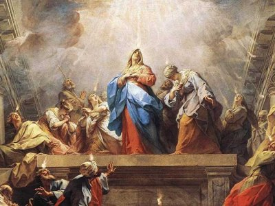

HODIE /  Solennità di Pentecoste. Lo Spirito Santo è lo Spirito di Cristo ed è la Persona divina che diffonde nel mondo la possibilità di imitare Cristo, dando Cristo al mondo e facendolo vivere in noi. Nell’insegnamento e nell’opera di Cristo, nulla è più essenziale del perdono. Egli ha proclamato il regno futuro del Padre come regno dell’amore misericordioso. Sulla croce, col suo sacrificio perfetto, ha espiato i nostri peccati, facendo così trionfare la misericordia e l’amore mediante - e non contro - la giustizia e l’ordine. Nella sua vittoria pasquale, egli ha portato a compimento ogni cosa. Per questo il Padre si compiace di effondere, per mezzo del Figlio, lo Spirito di perdono. Nella Chiesa degli apostoli il perdono viene offerto attraverso i sacramenti del battesimo e della riconciliazione e nei gesti della vita cristiana. Dio ha conferito al suo popolo una grande autorità stabilendo che la salvezza fosse concessa agli uomini per mezzo della Chiesa! Ma questa autorità, per essere conforme al senso della Pentecoste, deve sempre essere esercitata con misericordiae con gioia, che sono le caratteristiche di Cristo, che ha sofferto ed è risorto, e che esulta eternamente nello Spirito Santo.
Solennità di Pentecoste. Lo Spirito Santo è lo Spirito di Cristo ed è la Persona divina che diffonde nel mondo la possibilità di imitare Cristo, dando Cristo al mondo e facendolo vivere in noi. Nell’insegnamento e nell’opera di Cristo, nulla è più essenziale del perdono. Egli ha proclamato il regno futuro del Padre come regno dell’amore misericordioso. Sulla croce, col suo sacrificio perfetto, ha espiato i nostri peccati, facendo così trionfare la misericordia e l’amore mediante - e non contro - la giustizia e l’ordine. Nella sua vittoria pasquale, egli ha portato a compimento ogni cosa. Per questo il Padre si compiace di effondere, per mezzo del Figlio, lo Spirito di perdono. Nella Chiesa degli apostoli il perdono viene offerto attraverso i sacramenti del battesimo e della riconciliazione e nei gesti della vita cristiana. Dio ha conferito al suo popolo una grande autorità stabilendo che la salvezza fosse concessa agli uomini per mezzo della Chiesa! Ma questa autorità, per essere conforme al senso della Pentecoste, deve sempre essere esercitata con misericordiae con gioia, che sono le caratteristiche di Cristo, che ha sofferto ed è risorto, e che esulta eternamente nello Spirito Santo.
ANTIFONA / Lo Spirito del Signore riempie l’universo; egli, che tutto abbraccia, conosce ogni linguaggio. Alleluia. (Sap 1,7) ♦ L'amore di Dio è stato riversato nei nostri cuori per mezzo dello Spirito santo che abita in noi. Alleluia. (Rm 5, 5; 8, 11)
CONFITEOR / Confesso a Dio onnipotente e a voi, fratelli e sorelle, che ho molto peccato in pensieri, parole, opere e omissioni, per mia colpa, mia colpa, mia grandissima colpa. E supplico la beata sempre vergine Maria, gli angeli, i santi e voi, fratelli e sorelle, di pregare per me il Signore Dio nostro. Dio onnipotente abbia misericordia di noi, perdoni i nostri peccati e ci conduca alla vita eterna. Signore Pietà, Cristo pietà.
GLORIA / Gloria a Dio nell'alto dei cieli e pace in terra agli uomini di buona volontà. Noi ti lodiamo, ti benediciamo, ti adoriamo, ti glorifichiamo, ti rendiamo grazie per la tua gloria immensa, Signore Dio, Re del cielo, Dio Padre onnipotente. Signore, figlio unigenito, Gesù Cristo, Signore Dio, Agnello di Dio, Figlio del Padre, tu che togli i peccati dal mondo abbi pietà di noi; tu che togli i peccati dal mondo, accogli la nostra supplica; tu che siedi alla destra del Padre, abbi pietà di noi. Perché tu solo il Santo, tu solo il Signore, tu solo l'Altissimo, Gesù Cristo, con lo Spirito Santo: nella gloria di Dio Padre. Amen.
COLLETTA / O Dio, che nel mistero della Pentecoste santifichi la tua Chiesa in ogni popolo e nazione, diffondi sino ai confini della terra i doni dello Spirito Santo, e rinnova anche oggi nel cuore dei credenti i prodigi che nella tua bontà hai operato agli inizi della predicazione del Vangelo. Per il nostro Signore Gesù Cristo, tuo Figlio, che è Dio, e vive e regna con te, nell'unità dello Spirito Santo, per tutti i secoli dei secoli.
LETTURA1 / Tutti furono colmati di Spirito Santo e cominciarono a parlare / Dagli Atti degli Apostoli (At 2,1-11) / Mentre stava compiendosi il giorno della Pentecoste, si trovavano tutti insieme nello stesso luogo. Venne all'improvviso dal cielo un fragore, quasi un vento che si abbatte impetuoso, e riempì tutta la casa dove stavano. Apparvero loro lingue come di fuoco, che si dividevano, e si posarono su ciascuno di loro, e tutti furono colmati di Spirito Santo e cominciarono a parlare in altre lingue, nel modo in cui lo Spirito dava loro il potere di esprimersi. Abitavano allora a Gerusalemme Giudei osservanti, di ogni nazione che è sotto il cielo. A quel rumore, la folla si radunò e rimase turbata, perché ciascuno li udiva parlare nella propria lingua. Erano stupiti e, fuori di sé per la meraviglia, dicevano: «Tutti costoro che parlano non sono forse Galilei? E come mai ciascuno di noi sente parlare nella propria lingua nativa? Siamo Parti, Medi, Elamìti; abitanti della Mesopotàmia, della Giudea e della Cappadòcia, del Ponto e dell'Asia, della Frigia e della Panfìlia, dell'Egitto e delle parti della Libia vicino a Cirène, Romani qui residenti, Giudei e proséliti, Cretesi e Arabi, e li udiamo parlare nelle nostre lingue delle grandi opere di Dio». / Parola di Dio.
PSALMUS / (Sal 103) Manda il tuo Spirito, Signore, a rinnovare la terra. / Benedici il Signore, anima mia! Sei tanto grande, Signore, mio Dio! Quante sono le tue opere, Signore! Le hai fatte tutte con saggezza; la terra è piena delle tue creature. / Togli loro il respiro: muoiono, e ritornano nella loro polvere. Mandi il tuo spirito, sono creati, e rinnovi la faccia della terra. / Sia per sempre la gloria del Signore; gioisca il Signore delle sue opere. A lui sia gradito il mio canto, io gioirò nel Signore.
LETTURA2A / Noi tutti siamo stati battezzati mediante un solo Spirito in un solo corpo / Dalla prima lettera di san Paolo apostolo ai Corìnzi (1Cor 12,3b-7.12-13) / Fratelli, nessuno può dire: «Gesù è Signore!», se non sotto l'azione dello Spirito Santo. Vi sono diversi carismi, ma uno solo è lo Spirito; vi sono diversi ministeri, ma uno solo è il Signore; vi sono diverse attività, ma uno solo è Dio, che opera tutto in tutti. A ciascuno è data una manifestazione particolare dello Spirito per il bene comune. Come infatti il corpo è uno solo e ha molte membra, e tutte le membra del corpo, pur essendo molte, sono un corpo solo, così anche il Cristo. Infatti noi tutti siamo stati battezzati mediante un solo Spirito in un solo corpo, Giudei o Greci, schiavi o liberi; e tutti siamo stati dissetati da un solo Spirito. / Parola di Dio.
LETTURA2B / Il frutto dello Spirito / Dalla lettera di san Paolo apostolo ai Gàlati (Gal 5,16-25) / Fratelli, camminate secondo lo Spirito e non sarete portati a soddisfare il desiderio della carne. La carne infatti ha desideri contrari allo Spirito e lo Spirito ha desideri contrari alla carne; queste cose si oppongono a vicenda, sicché voi non fate quello che vorreste. Ma se vi lasciate guidare dallo Spirito, non siete sotto la Legge. Del resto sono ben note le opere della carne: fornicazione, impurità, dissolutezza, idolatria, stregonerie, inimicizie, discordia, gelosia, dissensi, divisioni, fazioni, invidie, ubriachezze, orge e cose del genere. Riguardo a queste cose vi preavviso, come già ho detto: chi le compie non erediterà il regno di Dio. Il frutto dello Spirito invece è amore, gioia, pace, magnanimità, benevolenza, bontà, fedeltà, mitezza, dominio di sé; contro queste cose non c'è Legge. Quelli che sono di Cristo Gesù hanno crocifisso la carne con le sue passioni e i suoi desideri. Perciò se viviamo dello Spirito, camminiamo anche secondo lo Spirito. / Parola di Dio.
LETTURA2C / Quelli che sono guidati dallo Spirito di Dio, questi sono figli di Dio / Dalla lettera di san Paolo apostolo ai Romani. (Rm 8,8-17) / Fratelli, quelli che si lasciano dominare dalla carne non possono piacere a Dio. Voi però non siete sotto il dominio della carne, ma dello Spirito, dal momento che lo Spirito di Dio abita in voi. Se qualcuno non ha lo Spirito di Cristo, non gli appartiene. Ora, se Cristo è in voi, il vostro corpo è morto per il peccato, ma lo Spirito è vita per la giustizia. E se lo Spirito di Dio, che ha risuscitato Gesù dai morti, abita in voi, colui che ha risuscitato Cristo dai morti darà la vita anche ai vostri corpi mortali per mezzo del suo Spirito che abita in voi. Così dunque, fratelli, noi siamo debitori non verso la carne, per vivere secondo i desideri carnali, perché, se vivete secondo la carne, morirete. Se, invece, mediante lo Spirito fate morire le opere del corpo, vivrete. Infatti tutti quelli che sono guidati dallo Spirito di Dio, questi sono figli di Dio. E voi non avete ricevuto uno spirito da schiavi per ricadere nella paura, ma avete ricevuto lo Spirito che rende figli adottivi, per mezzo del quale gridiamo: «Abbà! Padre!». Lo Spirito stesso, insieme al nostro spirito, attesta che siamo figli di Dio. E se siamo figli, siamo anche eredi: eredi di Dio, coeredi di Cristo, se davvero prendiamo parte alle sue sofferenze per partecipare anche alla sua gloria. / Parola di Dio.
SEQUENZA / Vieni, Santo Spirito, manda a noi dal cielo un raggio della tua luce. / Vieni, padre dei poveri, vieni, datore dei doni, vieni, luce dei cuori. / Consolatore perfetto, ospite dolce dell’anima, dolcissimo sollievo. / Nella fatica, riposo, nella calura, riparo, nel pianto, conforto. / O luce beatissima, invadi nell’intimo il cuore dei tuoi fedeli. / Senza la tua forza, nulla è nell'uomo, nulla senza colpa. / Lava ciò che è sórdido, bagna ciò che è arido, sana ciò che sánguina. / Piega ciò che è rigido, scalda ciò che è gelido, drizza ciò che è sviato. / Dona ai tuoi fedeli, che solo in te confidano, i tuoi santi doni. / Dona virtù e premio, dona morte santa, dona gioia eterna.
ACCLAMATIO / Alleluia, alleluia / Vieni, Santo Spirito, riempi i cuori dei tuoi fedeli e accendi in essi il fuoco del tuo amore. / Alleluia.
VANGELO-A / Come il Padre ha mandato me anch'io mando voi / Dal Vangelo secondo Giovanni (Gv 20,19-23) / La sera di quel giorno, il primo della settimana, mentre erano chiuse le porte del luogo dove si trovavano i discepoli per timore dei Giudei, venne Gesù, stette in mezzo e disse loro: «Pace a voi!». Detto questo, mostrò loro le mani e il fianco. E i discepoli gioirono al vedere il Signore. Gesù disse loro di nuovo: «Pace a voi! Come il Padre ha mandato me, anche io mando voi». Detto questo, soffiò e disse loro: «Ricevete lo Spirito Santo. A coloro a cui perdonerete i peccati, saranno perdonati; a coloro a cui non perdonerete, non saranno perdonati». / Parola del Signore.
VANGELO-B / Lo Spirito di verità vi guiderà a tutta la verità / Dal Vangelo secondo Giovanni (Gv 15,26-27; 16,12-15) / In quel tempo, Gesù disse ai suoi discepoli: «Quando verrà il Paràclito, che io vi manderò dal Padre, lo Spirito della verità che procede dal Padre, egli darà testimonianza di me; e anche voi date testimonianza, perché siete con me fin dal principio. Molte cose ho ancora da dirvi, ma per il momento non siete capaci di portarne il peso. Quando verrà lui, lo Spirito della verità, vi guiderà a tutta la verità, perché non parlerà da se stesso, ma dirà tutto ciò che avrà udito e vi annuncerà le cose future. Egli mi glorificherà, perché prenderà da quel che è mio e ve lo annuncerà. Tutto quello che il Padre possiede è mio; per questo ho detto che prenderà da quel che è mio e ve lo annuncerà». / Parola del Signore.
VANGELO-C / Lo Spirito Santo vi insegnerà ogni cosa / Dal Vangelo secondo Giovanni (Gv 14,15-16.23-26) / In quel tempo, Gesù disse ai suoi discepoli: «Se mi amate, osserverete i miei comandamenti; e io pregherò il Padre ed egli vi darà un altro Paràclito perché rimanga con voi per sempre. Se uno mi ama, osserverà la mia parola e il Padre mio lo amerà e noi verremo a lui e prenderemo dimora presso di lui. Chi non mi ama, non osserva le mie parole; e la parola che voi ascoltate non è mia, ma del Padre che mi ha mandato. Vi ho detto queste cose mentre sono ancora presso di voi. Ma il Paràclito, lo Spirito Santo che il Padre manderà nel mio nome, lui vi insegnerà ogni cosa e vi ricorderà tutto ciò che io vi ho detto». / Parola del Signore.
CREDO / Credo in un solo Dio, Padre onnipotente, creatore del cielo e della terra, di tutte le cose visibili e invisibili. Credo in un solo Signore, Gesù Cristo, unigenito Figlio di Dio, nato dal Padre prima di tutti i secoli: Dio da Dio, Luce da Luce, Dio vero da Dio vero, generato, non creato, della stessa sostanza del Padre; per mezzo di lui tutte le cose sono state create. Per noi uomini e per la nostra salvezza discese dal cielo, e per opera dello Spirito Santo si è incarnato nel seno della Vergine Maria e si è fatto uomo. Fu crocifisso per noi sotto Ponzio Pilato, morì e fu sepolto. Il terzo giorno è risuscitato, secondo le Scritture, è salito al cielo, siede alla destra del Padre. E di nuovo verrà, nella gloria, per giudicare i vivi e i morti, e il suo regno non avrà fine. Credo nello Spirito Santo, che è Signore e dà la vita, e procede dal Padre e dal Figlio. Con il Padre e il Figlio è adorato e glorificato, e ha parlato per mezzo dei profeti. Credo la Chiesa, una santa cattolica e apostolica. Professo un solo battesimo per il perdono dei peccati. Aspetto la risurrezione dei morti e la vita del mondo che verrà. Amen.
OREMUS1 / Apriamo il nostro cuore ad accogliere il dono dello Spirito, che suscita in noi la preghiera e ci spinge ad essere attenti alle necessità e alle sofferenze di tutti gli uomini del mondo. Preghiamo insieme e diciamo: Vieni, Spirito Santo. / Spirito Santo, fuoco, luce, calore, vieni in noi con forza e potenza, per diffondere a tutti i popoli il messaggio di salvezza di Gesù. / Spirito del Padre, che ci rivesti del suo splendore, rendici capaci di amare anche i nemici, per donare a tutti i segni della sua bontà. / Spirito del Figlio, che in Gesù ti sei manifestato pienamente, rendi anche noi obbedienti al Padre e sottomessi gli uni gli altri. / Spirito di verità, che ci sveli i segreti dell'amore divino, plasma il mondo, perché impari a lasciarsi guidare docilmente dalla tua voce e si orienti verso autentiche scelte di bene. / Spirito Consolatore, tu che unisci i fedeli in un solo corpo, donaci unità perfetta e continua, perché siamo in Cristo un corpo solo e un'anima sola. / Spirito d'amore, luce benevola del Padre, guida chi soffre ad abbandonarsi con fiducia alla tua azione consolatrice, per trovare in te conforto e speranza. / Spirito, dono del Cristo, anima della Chiesa, dona ai tuoi fedeli i tuoi santi doni, la forza della fede, la gioia dell'amore, il coraggio della speranza. / Esaudisci, o Signore, le nostre preghiere e, per la potenza del tuo Santo Spirito, trasforma i nostri desideri nel compimento della tua volontà. Tu che vivi e regni nei secoli dei secoli.
OREMUS2 / Fratelli e sorelle, lo Spirito Santo ci avvolge con il suo amore e ci rende parte della Chiesa, corpo di Cristo che opera nel mondo. Chiediamo al Padre di essere rinnovati nell’intimo, per essere sempre più conformi alla sua volontà. Preghiamo dicendo: Ascoltaci Signore. / Perché la Chiesa abbia piena coscienza di essere il popolo di Dio che ha ricevuto la missione di annunciare al mondo la salvezza. Preghiamo. / Perché le Chiese e le comunità cristiane si lascino invadere dal soffio dello Spirito e dialoghino nella ricerca convinta dell’unità. Preghiamo. / Per tutti i cristiani impegnati nelle istituzioni, perché si lascino guidare dallo Spirito a perseguire la promozione della dignità dell’uomo. Preghiamo. / Perché i malati e i sofferenti si aprano all’azione dello Spirito e ricevano da lui pace e consolazione. Preghiamo. / Perché la nostra comunità, animata dallo Spirito Santo, valorizzi i carismi di tutti i suoi membri e li impieghi per il bene della Chiesa. Preghiamo. / Esaudisci, o Padre, le nostre preghiere e manda su di noi il dono dello Spirito, perché, avvolti nel suo mistero d’amore, percorriamo le vie della vita terrena tesi alla salvezza eterna. Te lo chiediamo per Cristo nostro Signore.
OREMUS3 / Lo Spirito del Signore, atteso e invocato, discende oggi sulla Chiesa, per compiere anche nel nostro tempo i grandi prodigi della Pentecoste. Apriamoci alla sua azione, per annunziare e testimoniare a tutti la potenza liberatrice della Pasqua di risurrezione. Preghiamo insieme e diciamo: Rinnovaci, o Padre, nel tuo Santo Spirito. / Per la Chiesa diffusa nel mondo, perché abbia la coscienza viva di essere il popolo messianico che ha come legge la carità e come caratteristica la libertà dei figli, a cui è affidato l'annunzio del Vangelo, preghiamo. R. / Per il papa, successore di Pietro, e per tutti i vescovi che formano con lui il collegio apostolico, perché animati dalla sapienza e dalla forza dello Spirito annunzino in ogni linguaggio la Parola che salva, preghiamo. R. / Per tutti i figli di Dio, perché consapevoli della dignità profetica, sacerdotale e regale a loro comunicata dallo Spirito del Signore, diventino sempre più un Vangelo vivente, leggibile dai vicini e dai lontani, preghiamo. R. / Per ogni uomo che ama la verità, soffre per la giustizia, lotta per la causa della libertà e della pace, perché lo Spirito Santo rinnovi i suoi prodigi e rianimi i cuori alla speranza, preghiamo. R. / Per gli uomini e le donne quotidianamente impegnati in ogni campo dell'attività umana, perché siano consapevoli che ad ognuno di loro è consegnato un dono e un messaggio dello Spirito per la costruzione del mondo nuovo, preghiamo. R. / O Padre, fonte prima di ogni rinnovamento nell'amore, fa' che in ogni lingua, popolo e cultura risuoni l'annunzio gioioso della fede apostolica e il tuo Santo Spirito rechi al mondo la forza rigenerante della Pasqua del tuo Figlio. Egli vive e regna nei secoli dei secoli. Amen.
OREMUS4 / Il Signore ci ricorda il suo annuncio ogni giorno con la voce dello Spirito. Tuttavia, ascoltare ed obbedire alla sua parola, vivendola, rimane il frutto di una nostra libera scelta. Preghiamo insieme e diciamo: Signore rendici voce dello Spirito. / Perché abbiamo sempre il coraggio di modificare il nostro linguaggio per mantenere la sostanza del tuo messaggio. Preghiamo. / Perché l’ascolto della tua parola ci spinga a coinvolgerci interamente in ciò che facciamo ogni giorno, senza mai alienarci da noi stessi. Preghiamo. / Perché il nostro corpo sia sempre il tempio in cui dimora il tuo Spirito. Preghiamo. / Perché anche nell’imperfezione e nella miseria l’amore per te sia sempre una via sicura per essere liberi. Preghiamo. / O Padre, ogni giorno il mondo è un posto ricco sia di segni di speranza sia di cose orribili da accogliere e migliorare. Fa’ che il tuo Spirito ci aiuti a vedere sempre i primi per crescere nella speranza, e a non scoraggiarci di fronte alle seconde per saperle correggere. Te lo chiediamo per Cristo nostro Signore.
OFFERTORIO / Manda, o Padre, lo Spirito Santo promesso dal tuo Figlio, perché riveli pienamente ai nostri cuori il mistero di questo sacrificio e ci apra alla conoscenza della verità tutta intera. Per Cristo nostro Signore.
PREFAZIO / Il mistero della Pentecoste / È veramente cosa buona e giusta, nostro dovere e fonte di salvezza, rendere grazie sempre e in ogni luogo a te, Signore, Padre santo, Dio onnipotente ed eterno. Oggi hai portato a compimento il mistero pasquale, e su coloro che hai reso figli di adozione in Cristo tuo Figlio hai effuso lo Spirito Santo, che agli albori della Chiesa nascente ha rivelato a tutti i popoli il mistero nascosto nei secoli e ha riunito i linguaggi della famiglia umana nella professione dell’unica fede. Per questo mistero, nella pienezza della gioia pasquale, l’umanità esulta su tutta la terra e con l’assemblea degli angeli e dei santi canta senza fine l’inno della tua gloria: Santo, Santo, Santo il Signore Dio dell’universo. I cieli e la terra sono pieni della tua gloria. Osanna nell’alto dei cieli. Benedetto colui che viene nel nome del Signore. Osanna nell’alto dei cieli.

COMMUNIO / Tutti furono colmati di Spirito Santo, e cominciarono a parlare delle grandi opere di Dio. Alleluia. (At 2,4.11) ♦ Quando verrà lo Spirito della verità, vi guiderà alla verità tutta intera. Alleluia. (Gv 16, 13)
GRATIAS / O Dio, che doni alla tua Chiesa la comunione ai beni del cielo, custodisci in noi la tua grazia, perché resti sempre vivo il dono dello Spirito Santo che abbiamo ricevuto e questo cibo spirituale giovi alla nostra salvezza. Per Cristo nostro Signore. / Benedizione solenne / Dio, sorgente di ogni luce, che ha illuminato i discepoli con l’effusione dello Spirito consolatore, vi rallegri con la sua benedizione e vi colmi sempre dei doni del suo Spirito. R. Amen. / Il Signore risorto vi comunichi il fuoco dello Spirito e vi illumini con la sua sapienza. R. Amen. / Lo Spirito Santo, che ha riunito i popoli diversi nell’unica Chiesa, vi renda perseveranti nella fede e gioiosi nella speranza fino alla visione beata nel cielo. R. Amen. / E la benedizione di Dio onnipotente, Padre e Figlio e Spirito Santo, discenda su di voi e con voi rimanga sempre. R. Amen. Portate a tutti la gioia del Signore risorto. Andate in pace. Alleluia, alleluia. R. Rendiamo grazie a Dio. Alleluia, alleluia.
LECTIO
PREGO1 / INNO DI PENTECOSTE / Vieni, o Spirito del cielo, manda un raggio di tua luce, manda il fuoco creatore. Misterioso cuor del mondo, o bellezza salvatrice, vieni, dono della vita. Tu sei il vento sugli abissi, tu il respiro al primo adamo, ornamento a tutto il cielo. Vieni, luce della luce, delle cose tu rivela, la segreta loro essenza. Concezione germinale della terra e di ogni uomo, gloria intatta della Vergine. Tu sei il fuoco del roveto, sei la voce dei profeti, sei parola del futuro. Vieni, a fare della terra una nuova creazione, del Signore un solo tempio. O tu Dio in Dio amore, tu la luce del mistero, tu la vita di ogni vita. (D.M. Turoldo, la nostra preghiera)
PREGO2 / Spirito di Vita, che in principio aleggiavi sull'abisso, aiuta l'umanità del nostro tempo a comprendere che l'esclusione di Dio la porta a smarrirsi nel deserto del mondo, e che solo dove entra la fede fioriscono la dignità e la libertà e la società tutta si edifica nella giustizia. / Spirito di Pentecoste, che fai della Chiesa un solo Corpo, restituisci noi battezzati a un'autentica esperienza di comunione; rendici segno vivo della presenza del Risorto nel mondo, comunità di santi che vive nel servizio della carità. / Spirito Santo, che abiliti alla missione, donaci di riconoscere che, anche nel nostro tempo, tante persone sono in ricerca della verità sulla loro esistenza e sul mondo. Rendici collaboratori della loro gioia con l'annuncio del Vangelo di Gesù Cristo, chicco del frumento di Dio, che rende buono il terreno della vita e assicura l'abbondanza del raccolto. Amen. (papa Benedetto XVI)
CATECHESI1 / Gli eventi pasquali - la passione, la morte e la risurrezione di Cristo - sono anche il tempo della nuova venuta dello Spirito Santo, come Paraclito e Spirito di verità. Sono il tempo del «nuovo inizio» della comunicazione del Dio uno e trino all'umanità nello Spirito Santo, per opera di Cristo Redentore. Questo nuovo inizio è la redenzione del mondo: «Dio infatti ha tanto amato il mondo da dare il suo Figlio unigenito» (Gv 3,16). Già ..., nel dono del Figlio si esprime la più profonda essenza di Dio, il quale, come amore, è fonte inesauribile di generosità. Nel dono fatto dal Figlio si completano la rivelazione e l'elargizione dell'eterno amore: lo Spirito Santo, che nelle imperscrutabili profondità della divinità è una Persona-dono, per opera del Figlio, cioè mediante il mistero pasquale, in modo nuovo viene dato agli apostoli e alla Chiesa e, per mezzo di essi, all'umanità e al mondo intero. L'espressione definitiva di questo mistero si ha nel giorno della Risurrezione. In questo giorno Gesù di Nazareth, «nato dalla stirpe di Davide secondo la carne» - come scrive l'apostolo Paolo - viene «costituito Figlio di Dio con potenza secondo lo Spirito di santificazione mediante la risurrezione dai morti» (Rom 1,3-4). Si può dire così che l'«elevazione» messianica di Cristo nello Spirito Santo raggiunga il suo culmine nella Risurrezione, nella quale egli si rivela anche come Figlio di Dio, «pieno di potenza». E questa potenza, le cui fonti zampillano nell'imperscrutabile comunione trinitaria, si manifesta, prima di tutto, nel fatto che il Cristo risorto, se da una parte adempie la promessa di Dio, già espressa per bocca del Profeta: «Vi darò un cuore nuovo, metterò dentro di voi uno spirito nuovo, ...il mio spirito» (Ez 36,26-27), dall'altra compie la sua stessa promessa, fatta agli apostoli con le parole: «Quando me ne sarò andato, ve lo manderò» (Gv 16,7). È lui: lo Spirito di verità, il Paraclito, mandato da Cristo risorto per trasformarci nella sua stessa immagine di risorto. (san Giovanni Paolo II, papa)
EVANGELIZO1 / San Bonaventura (1221-1274), francescano, dottore della Chiesa / L'Albero di Vita, n. 39 (Opere spirituali, tomo III, S. Francesco d'Assisi) / Il Fuoco della Pentecoste / Sette settimane dopo la risurrezione, il cinquantesimo giorno, "i discepoli erano riuniti con le donne e Maria Madre di Gesù, e all'improvviso venne un rombo dal cielo simile al rumore del vento che soffia con forza" (cfr At 1, 14; 2, 1-2). Lo Spirito discese allora su quel gruppo di centoventi persone e apparve sotto forma di lingue di fuoco, perché stava per mettere la parola sulla loro bocca, la luce alla loro intelligenza e l'ardore al loro amore. Tutti furono riempiti di Spirito Santo e si misero a parlare in diverse lingue secondo l'ispirazione dello stesso Spirito Santo. Insegnò loro ogni verità, li infiammò di perfetto amore e li confermò in ogni virtù. Ed anche aiutati dalla sua grazia, illuminati dalla sua dottrina e fortificati dalla sua potenza, benché fossero pochi e semplici, "piantarono la Chiesa a prezo del loro sangue", nel mondo intero, sia con discorsi infuocati, sia con esempi perfetti, sia con miracoli prodigiosi. Questa Chiesa purificata, illuminata e condotta a perfezione dalla virtù dello stesso Spirito Santo, si rese amabile al suo Sposo, tanto ch'ella apparve tutta bella, ammirabile coi suoi diversi ornamenti, e al contrario terribile, come un'armata schierata a battaglia, a Satana e ai suoi angeli.
EVANGELIZO2 / Sant'Aelredo di Rievaulx (1110-1167) monaco cistercense inglese/ Discorso sulla settupla voce dello Spirito alla Pentecoste / «Mandi il tuo Spirito... e rinnovi la faccia della terra» (Ps 103,30) / In principio, lo Spirito di Dio riempì l'universo, secondo il disegno di Dio. «Si estende da un confine all'altro con forza, governa con bontà eccellente ogni cosa» (Sap 8,1). Ma per quanto riguarda la sua opera di santificazione, è soltanto a partire dal giorno della Pentecoste che «lo Spirito del Signore riempie l'universo» (Sap 1,7). Infatti oggi questo Spirito di mitezza è mandato dal Padre e dal Figlio per santificare ogni creatura secondo un piano nuovo, un modo nuovo, una manifestazione nuova della sua potenza e della sua forza. Prima, «non c'era ancora lo Spirito, perché Gesù non era stato ancora glorificato» (Gv 7,39)... Oggi, venendo dalla dimora, lo Spirito viene dato alle anime dei mortali con tutta la sua ricchezza, tutta la sua fecondità. Perciò questa rugiada divina si posa su tutta la terra, nella diversità dei suoi doni spirituali. È giusto che la pienezza delle sue ricchezze sia scesa per noi dall'alto del cielo, dato che pochi giorni prima, grazie alla generosità della nostra terra, il cielo aveva ricevuto un frutto di una dolcezza meravigliosa... L'umanità di Cristo, è tutta la grazia della terra; lo Spirito di Cristo, è tutta la dolcezza del cielo. È avvenuto dunque uno scambio molto salutare: l'umanità di Cristo era salita dalla terra al cielo; oggi dal cielo è disceso verso di noi lo Spirito di Cristo... Dappertutto agisce lo Spirito Santo; dappertutto lo Spirito prende la parola. Certamente, prima dell'Ascensione, lo Spirito del Signore era stato dato ai discepoli quando il Signore aveva detto: «Ricevete lo Spirito Santo; a chi rimetterete i peccati, saranno rimessi e a chi non li rimetterete, resteranno non rimessi». Ma prima della Pentecoste, non si era sentita la voce dello Spirito Santo, non si era visto brillare la sua potenza. E la sua conoscenza non era venuta fino ai discepoli di Cristo, il cui coraggio non era ancora stato confermato, visto che erano ancora costretti a nascondersi dalla paura, in una stanza chiusa a chiave. A partire da oggi però, «Il Signore tuona sulle acque..., il tuono saetta fiamme di fuoco..., e tutti dicono: Gloria!» (Sal 28,3-9).
EVANGELIZO3 / San Giovanni Maria Vianney (1786-1859) sacerdote, curato d'Ars / Spirito del Curato d'Ars nei Catechismi, discorsi, Conversazioni. / Lo Spirito Santo Paraclito / L'uomo è nulla di per sé, ma è molto con lo Spirito Santo. L'uomo è tutto terrestre, tutto animale; solo lo Spirito Santo può elevare l'anima e portarla in alto. Come gli occhiali che ingrandiscono le cose, lo Spirito Santo ci fa vedere il bene e il male ingranditi. Con lo Spirito Santo si vede tutto più grande: si vede la grandezza delle minime azioni fatte per Dio, e la grandezza delle minime mancanze. Come un orologiaio con i suoi occhiali distingue i piccoli congegni dell'orologio, con la luce dello Spirito Santo noi distinguiamo i dettagli della nostra povera vita. Senza lo Spirito Santo tutto è freddo: anche quando si sente che il fervore viene meno, bisogna presto fare una novena allo Spirito Santo per chiedere la fede e l'amore!
EVANGELIZO-21 / San Bruno di Segni (ca 1045-1123) vescovo / Commento sull'Esodo, cap. 15 / Dalla Pentecoste ebraica alla Pentecoste cristiana / Il monte Sinai è il simbolo del monte Sion. (...) Notate a che punto le due alleanze si fanno eco l'una all'altra, con quale sintonia la festa della Pentecoste è celebrata in ciascuna di loro. (...) Sul monte Sion, come sul monte Sinai, il Signore è sceso, lo stesso giorno e in modo molto simile. (...) Luca scrisse: «Venne all'improvviso dal cielo un rombo, come di vento che si abbatte gagliardo. Apparvero loro lingue di fuoco che si dividevano e si posarono su ciascuno di loro» (At 2,2-3). (...) Sì, qui e là, un forte rumore si fa sentire, un fuoco si fa vedere. Ma al Sinai era un fumo denso, sul monte Sion lo splendore di una luce brillantissima. Nel primo caso si tratta di una «copia e un'ombra», nel secondo caso, delle «realtà» (Eb 8,5). Un tempo, si sentiva il tuono, ora si individuano le voci degli apostoli. Da un lato i lampi, dall'altro dei prodigi si manifestano in ogni luogo. (...) «Tutti uscirono dall'accampamento incontro a Dio e stettero in piedi alle falde del monte» (Es 19,17). Si legge negli Atti degli Apostoli: «Venuto quel fragore, la folla si radunò» (...) Da Gerusalemme, il popolo si radunò in piedi alla montagna di Sion, cioè nel luogo in cui Sion, figura della santa Chiesa, cominciava a edificarsi, a posare le sue fondamenta. (...) «Il monte Sinai era tutto fumante, perché su di esso era sceso il Signore nel fuoco» dice l'Esodo (v.18). (...) Potevano forse non ardere, coloro che erano stati infiammati dal grande fuoco dello Spirito Santo? Come il fumo accenna alla presenza del fuoco, così con la franchezza dei loro discorsi e con la diversità delle lingue, il fuoco dello Spirito Santo manifestava la sua presenza nel cuore degli apostoli. Beati i cuori ricolmi di questo fuoco! Beati gli uomini infiammati da questo ardore. «Il monte tremava molto. Il suono della tromba diventava sempre più intenso» (V. 19). (...) Allo stesso modo, la voce degli apostoli e la loro predicazione divennero sempre più forti; si fecero sentire sempre più lontano finché «per tutta la terra si diffondesse la loro voce e ai confini del mondo la loro parola» (Sal 18,5).
DiBruno1 / PRENDERÀ DA QUEL CHE È MIO (At 2,1-11; Sal 103; Gal 5,16-25; Gv 15,26-27; 16,12-15) / Lo Spirito Santo è la Comunione Eterna tra il Padre e il Figlio. Egli prende tutto ciò che è del Padre e lo dona al Figlio. Prende tutto ciò che è del Figlio e lo dona al Padre. Sappiamo per rivelazione che tutto ciò che è del Padre e tutto il Padre dallo Spirito Santo è stato dato a Cristo. Cristo è stato costituito mediatore unico tra il Padre e l’intero universo. Lui è mediatore unico nella creazione, nella redenzione, nella salvezza, nella grazia, nella verità, nel dono della vita eterna. In quel tempo Gesù disse: «Ti rendo lode, Padre, Signore del cielo e della terra, perché hai nascosto queste cose ai sapienti e ai dotti e le hai rivelate ai piccoli. Sì, o Padre, perché così hai deciso nella tua benevolenza. Tutto è stato dato a me dal Padre mio; nessuno conosce il Figlio se non il Padre, e nessuno conosce il Padre se non il Figlio e colui al quale il Figlio vorrà rivelarlo. Venite a me, voi tutti che siete stanchi e oppressi, e io vi darò ristoro. Prendete il mio giogo sopra di voi e imparate da me, che sono mite e umile di cuore, e troverete ristoro per la vostra vita. Il mio giogo infatti è dolce e il mio peso leggero» (Mt 11,25-30). In principio era il Verbo, e il Verbo era presso Dio e il Verbo era Dio. Egli era, in principio, presso Dio: tutto è stato fatto per mezzo di lui e senza di lui nulla è stato fatto di ciò che esiste. In lui era la vita e la vita era la luce degli uomini; la luce splende nelle tenebre e le tenebre non l’hanno vinta. Veniva nel mondo la luce vera, quella che illumina ogni uomo. Era nel mondo e il mondo è stato fatto per mezzo di lui; eppure il mondo non lo ha riconosciuto. Venne fra i suoi, e i suoi non lo hanno accolto. A quanti però lo hanno accolto ha dato potere di diventare figli di Dio: a quelli che credono nel suo nome, i quali, non da sangue né da volere di carne né da volere di uomo, ma da Dio sono stati generati. E il Verbo si fece carne e venne ad abitare in mezzo a noi; e noi abbiamo contemplato la sua gloria, gloria come del Figlio unigenito che viene dal Padre, pieno di grazia e di verità. Dalla sua pienezza noi tutti abbiamo ricevuto: grazia su grazia. Perché la Legge fu data per mezzo di Mosè, la grazia e la verità vennero per mezzo di Gesù Cristo. Dio, nessuno lo ha mai visto: il Figlio unigenito, che è Dio ed è nel seno del Padre, è lui che lo ha rivelato (Gv 1,1-18). Non vi è nell’universo alcuna comunione se non nello Spirito Santo. Per Lui, tutto il Padre si è dato al Figlio. Per Lui tutto il Figlio si dona al Padre. Ora il Padre ha stabilito che tutto Cristo, nel quale è tutto Lui, sia dato ad ogni uomo. Questo dono può compiersi solo nella comunione dello Spirito Santo. Il Padre in Gesù e per Lui dona lo Spirito Santo ai discepoli. Lo Spirito Santo crea la comunione tra Cristo e i discepoli. Prende Cristo e lo pone nel cuore dei discepoli, perché Lui viva tutto in essi, allo stesso modo che tutto il Padre vive in Cristo. Tutto si compie nella comunione dello Spirito. Quando verrà il Paràclito, che io vi manderò dal Padre, lo Spirito della verità che procede dal Padre, egli darà testimonianza di me; e anche voi date testimonianza, perché siete con me fin dal principio. Molte cose ho ancora da dirvi, ma per il momento non siete capaci di portarne il peso. Quando verrà lui, lo Spirito della verità, vi guiderà a tutta la verità, perché non parlerà da se stesso, ma dirà tutto ciò che avrà udito e vi annuncerà le cose future. Egli mi glorificherà, perché prenderà da quel che è mio e ve lo annuncerà. Tutto quello che il Padre possiede è mio; per questo ho detto che prenderà da quel che è mio e ve lo annuncerà. È giusto allora che ci chiediamo: se lo Spirito Santo ci dona tutto Cristo, allo stesso modo che a Cristo ha dato tutto il Padre, perché noi non siamo vita di Cristo sulla terra? Sappiamo che Gesù cresceva in sapienza e grazia. Se noi non cresciamo in obbedienza alla Parola di Gesù, siamo sempre “piccoli contenitori”. Quanta luce, verità, vita, volontà di Cristo Signore potrà lui versare in noi, se noi siamo addirittura contenitori pieni di fori a causa dei nostri vizi e peccati? Anche se lo Spirito Santo versasse nei nostri cuori tutto Cristo Gesù con ogni potenza di grazia e di verità, resterebbe in noi solo un attimo. Se vogliamo che lo Spirito Santo aumenti il dono di Cristo, dobbiamo iniziare con una vera lotta per l’estirpazione di ogni disobbedienza e vizio. Per ogni vizio che si toglie dalla mente, dal cuore, del corpo aumentano le nostre capacità di contenere Cristo Signore. Gesù conteneva tutto il Padre perché santissimo. / Vergine Maria, Madre della Redenzione, Angeli, Santi, fateci crescere in ogni virtù.
DiBruno-A / Ricevete lo Spirito Santo (Gv 20,19-23) / Con il dono dello Spirito Santo, Gesù dona mandato ai suoi Apostoli di costruire la città di Dio, in opposizione alla città degli uomini, il cui nome è Babele. Leggiamo nella Genesi: “Tutta la terra aveva un’unica lingua e uniche parole. Emigrando dall’oriente, gli uomini capitarono in una pianura nella regione di Sinar e vi si stabilirono. Si dissero l’un l’altro: «Venite, facciamoci mattoni e cuociamoli al fuoco». Il mattone servì loro da pietra e il bitume da malta. Poi dissero: «Venite, costruiamoci una città e una torre, la cui cima tocchi il cielo, e facciamoci un nome, per non disperderci su tutta la terra». Ma il Signore scese a vedere la città e la torre che i figli degli uomini stavano costruendo. Il Signore disse: «Ecco, essi sono un unico popolo e hanno tutti un’unica lingua; questo è l’inizio della loro opera, e ora quanto avranno in progetto di fare non sarà loro impossibile. Scendiamo dunque e confondiamo la loro lingua, perché non comprendano più l’uno la lingua dell’altro». Il Signore li disperse di là su tutta la terra ed essi cessarono di costruire la città. Per questo la si chiamò Babele, perché là il Signore confuse la lingua di tutta la terra e di là il Signore li disperse su tutta la terra” (Gen 11,1-9). Babele è la città della superbia, creatrice di confusione e di allontanamento degli uomini gli uni dagli altri. È anche la grande città dell’idolatria e dell’immoralità. Ben presto nei profeti Babele sarà sostituita con Babilonia, la città dell’ingiustizia, dell’idolatria, dell’immoralità, della schiavitù, di ogni vizio. / Chi è mandato dal Padre e da Cristo Gesù a costruire la nuova città, nella quale dovrà abitare la nuova umanità, anch’essa da costruire e da edificare, è lo Spirito Santo. Non però da solo, ma per mezzo degli Apostoli di Gesù. Questi, nello Spirito Santo e per Lui, dovranno edificare la nuova umanità, battezzando ogni uomo e rigenerandolo come nuova creatura, aggregandolo alla nuova città che è il corpo di Cristo, la sua Chiesa. Il neo rigenerato e neo aggregato dovrà essere alimentato con l’amore del Padre, la grazia di Cristo Gesù, la verità e la luce dello Spirito Santo. Questa opera gli Apostoli devono svolgerla senza alcuna interruzione. Se essi non lavorano, lo Spirito mai potrà operare. La nuova città non si costruisce e neanche la nuova umanità potrà essere rigenerata. Sono gli Apostoli e i Vescovi, loro successori, nella comunione tra di loro e con Simon Pietro, loro Pastore supremo nella verità e nella carità che sono in Cristo Gesù, i Padri, che dovranno formare il corpo di Cristo con l’aggiunta di nuovi membri, lo dovranno perennemente nutrire di grazia e verità, di luce e vita eterna, lo dovranno custodire nella carità del Padre, nella vita di Cristo, nella santità dello Spirito di Dio. Se essi, omettendo il loro ministero di luce e di grazia, di rigenerazione e di nutrimento del corpo di Cristo, si dedicano ad altro, l’umanità nuova mai verrà costruita e la città santa che è il corpo di Cristo mai verrà edificata sulla nostra terra. / La sera di quel giorno, il primo della settimana, mentre erano chiuse le porte del luogo dove si trovavano i discepoli per timore dei Giudei, venne Gesù, stette in mezzo e disse loro: «Pace a voi!». Detto questo, mostrò loro le mani e il fianco. E i discepoli gioirono al vedere il Signore. Gesù disse loro di nuovo: «Pace a voi! Come il Padre ha mandato me, anche io mando voi». Detto questo, soffiò e disse loro: «Ricevete lo Spirito Santo. A coloro a cui perdonerete i peccati, saranno perdonati; a coloro a cui non perdonerete, non saranno perdonati». / Collaboratori degli Apostoli nella costruzione del corpo di Cristo e nella rigenerazione e creazione della nuova umanità sono i presbiteri, i diaconi, ogni cresimato e battezzato. Ognuno deve partecipare con il suo particolare carisma, speciale ministero, singolare vocazione e missione. Se anche una sola persona priva lo Spirito Santo della sua opera, la costruzione della città rallenta i suoi lavori e il corpo di Cristo non risplende con tutta la potenza della sua luce e del suo amore. Così San Paolo: “Ed egli ha dato ad alcuni di essere apostoli, ad altri di essere profeti, ad altri ancora di essere evangelisti, ad altri di essere pastori e maestri, per preparare i fratelli a compiere il ministero, allo scopo di edificare il corpo di Cristo, finché arriviamo tutti all’unità della fede e della conoscenza del Figlio di Dio, fino all’uomo perfetto, fino a raggiungere la misura della pienezza di Cristo” (Ef 4,11-13). Ad ognuno è chiesta la sua opera. / Madre di Dio, Angeli, Santi, fateci costruttori del corpo di Cristo e della nuova umanità.
DiBruno-C / Egli vi darà un altro Paràclito / (At 2,1-11; Sal 103; Rm 8,8-17; Gv 14,15-16.23b-26) / Cristo Gesù è pieno di Spirito Santo. Su di Lui si è posato in tutta la sua pienezza. Ogni parte del suo corpo, del suo spirito, della sua anima era sotto il suo pieno governo. Quanto Isaia aveva profetizzato, Gesù attesta che si è puntualmente compiuto. / Un germoglio spunterà dal tronco di Iesse, un virgulto germoglierà dalle sue radici. Su di lui si poserà lo spirito del Signore, spirito di sapienza e d’intelligenza, spirito di consiglio e di fortezza, spirito di conoscenza e di timore del Signore. Si compiacerà del timore del Signore. Non giudicherà secondo le apparenze e non prenderà decisioni per sentito dire; ma giudicherà con giustizia i miseri e prenderà decisioni eque per gli umili della terra (Is 11,1-5). / Venne a Nàzaret, dove era cresciuto, e secondo il suo solito, di sabato, entrò nella sinagoga e si alzò a leggere. Gli fu dato il rotolo del profeta Isaia; aprì il rotolo e trovò il passo dove era scritto: Lo Spirito del Signore è sopra di me; per questo mi ha consacrato con l’unzione e mi ha mandato a portare ai poveri il lieto annuncio, a proclamare ai prigionieri la liberazione e ai ciechi la vista; a rimettere in libertà gli oppressi, a proclamare l’anno di grazia del Signore. Riavvolse il rotolo, lo riconsegnò all’inserviente e sedette. Nella sinagoga, gli occhi di tutti erano fissi su di lui. Allora cominciò a dire loro: «Oggi si è compiuta questa Scrittura che voi avete ascoltato» (Lc 4,16-21). / Lo Spirito Santo non solo dal Padre è stato dato a Cristo Gesù, esso è dato dal Padre per Cristo ad ogni uomo che vuole divenire corpo del Figlio suo. La prima opera dello Spirito Santo è la formazione del corpo di Cristo. Si diviene corpo di Cristo, si cresce come corpo di Cristo, si è mossi e guidati dallo Spirito Santo. Per quale missione? Per formare il corpo di Cristo. Lo Spirito è stato dato a Cristo per formare il corpo di Cristo, la sua Chiesa. Lo Spirito è dato ad ogni altro uomo per divenire vero corpo di Cristo e per formare il corpo di Cristo, attraverso l’annunzio del Vangelo in vista della conversione e del battesimo nel nome del Padre e del Figlio e dello Spirito Santo. Se questa missione non viene vissuta momento per momento, si rende vana tutta l’opera dello Spirito Santo. Esso è esposto a inutilità e futilità. Lo si invoca per le cose della terra, mentre la sua missione è di trasformare la carne in spirito nel corpo di Cristo. / Dal nostro corpo, nel corpo di Cristo, crescendo come corpo di Cristo nella santità, lo Spirito del Signore diviene Spirito di convincimento e di attrazione a Cristo. Non è il cristiano che convince, tocca il cuore, converte, santifica. È lo Spirito di Dio che dal suo corpo, se lui è vero corpo di Cristo, entra nel cuore dell’altro e gli mostra la bellezza di Cristo e la necessità di convertirsi a Lui, divenire suo corpo per avere la vita eterna. È questo il miracolo della Pentecoste. Pietro parla e lo Spirito di Pietro attrae a Cristo. / All’udire queste cose si sentirono trafiggere il cuore e dissero a Pietro e agli altri apostoli: «Che cosa dobbiamo fare, fratelli?». E Pietro disse loro: «Convertitevi e ciascuno di voi si faccia battezzare nel nome di Gesù Cristo, per il perdono dei vostri peccati, e riceverete il dono dello Spirito Santo. Per voi infatti è la promessa e per i vostri figli e per tutti quelli che sono lontani, quanti ne chiamerà il Signore Dio nostro». Con molte altre parole rendeva testimonianza e li esortava: «Salvatevi da questa generazione perversa!». Allora coloro che accolsero la sua parola furono battezzati e quel giorno furono aggiunte circa tremila persone (At 2,37-41). / Oggi il corpo di Cristo Gesù sta subendo una delle più devastanti emorragie. Molti membri del suo corpo sono già in necrosi. Non sono nella morte. Sono in putrefazione. Distaccandosi dal Vangelo di Cristo, si sono distaccati dal corpo di Cristo, hanno perso il loro principio soprannaturale di vita che è lo Spirito Santo. Sono in putrefazione. / Se mi amate, osserverete i miei comandamenti; e io pregherò il Padre ed egli vi darà un altro Paràclito perché rimanga con voi per sempre. «Se uno mi ama, osserverà la mia parola e il Padre mio lo amerà e noi verremo a lui e prenderemo dimora presso di lui. Chi non mi ama, non osserva le mie parole; e la parola che voi ascoltate non è mia, ma del Padre che mi ha mandato. / Non è la nostra preghiera che manda su di noi lo Spirito Santo. È la preghiera di Cristo Gesù. Essa è però condizionata all’osservanza perenne dei suoi comandamenti. / Madre di Dio, Angeli, Santi, fateci osservare i comandamenti e Gesù pregherà per noi.
DiBruno-21 / Vi guiderà a tutta la verità (Gv 15,26-27; 16,12-15) / Come guida lo Spirito Santo a tutta la verità? Guida in modo diretto e anche indiretto. In modo diretto per ispirazione, mozione, rivelazione, manifestazione. Così è avvenuto con Pietro quando è stato chiamato a recarsi in casa dei pagani: “Il giorno dopo, mentre quelli erano in cammino e si avvicinavano alla città, Pietro, verso mezzogiorno, salì sulla terrazza a pregare. Gli venne fame e voleva prendere cibo. Mentre glielo preparavano, fu rapito in estasi: vide il cielo aperto e un oggetto che scendeva, simile a una grande tovaglia, calata a terra per i quattro capi. In essa c’era ogni sorta di quadrupedi, rettili della terra e uccelli del cielo. Allora risuonò una voce che gli diceva: «Coraggio, Pietro, uccidi e mangia!». Ma Pietro rispose: «Non sia mai, Signore, perché io non ho mai mangiato nulla di profano o di impuro». E la voce di nuovo a lui: «Ciò che Dio ha purificato, tu non chiamarlo profano». Questo accadde per tre volte; poi d’un tratto quell’oggetto fu risollevato nel cielo. Mentre Pietro si domandava perplesso, tra sé e sé, che cosa significasse ciò che aveva visto, ecco gli uomini inviati da Cornelio: dopo aver domandato della casa di Simone, si presentarono all’ingresso, chiamarono e chiesero se Simone, detto Pietro, fosse ospite lì. Pietro stava ancora ripensando alla visione, quando lo Spirito gli disse: «Ecco, tre uomini ti cercano; àlzati, scendi e va’ con loro senza esitare, perché sono io che li ho mandati». Pietro scese incontro a quegli uomini e disse: «Eccomi, sono io quello che cercate. Qual è il motivo per cui siete venuti?». Risposero: «Il centurione Cornelio, uomo giusto e timorato di Dio, stimato da tutta la nazione dei Giudei, ha ricevuto da un angelo santo l’ordine di farti venire in casa sua per ascoltare ciò che hai da dirgli”. Pietro allora li fece entrare e li ospitò” (At 10,9-23). La conduzione immediata è sempre presente nella storia della Chiesa. Questa conduzione è chiamata “rivelazione privata” e interessa tutto il popolo di Dio. / In quel tempo, Gesù disse ai suoi discepoli: «Quando verrà il Paràclito, che io vi manderò dal Padre, lo Spirito della verità che procede dal Padre, egli darà testimonianza di me; e anche voi date testimonianza, perché siete con me fin dal principio. Molte cose ho ancora da dirvi, ma per il momento non siete capaci di portarne il peso. Quando verrà lui, lo Spirito della verità, vi guiderà a tutta la verità, perché non parlerà da se stesso, ma dirà tutto ciò che avrà udito e vi annuncerà le cose future. Egli mi glorificherà, perché prenderà da quel che è mio e ve lo annuncerà. Tutto quello che il Padre possiede è mio; per questo ho detto che prenderà da quel che è mio e ve lo annuncerà». / La conduzione indiretta o mediata avviene per studio, confronto, riflessione, dialogo. Il concilio ecumenico è la somma manifestazione di questa conduzione mediata. Ecco quanto ha stabilito il primo concilio ecumenico, quello di Gerusalemme: “Per questo io ritengo che non si debbano importunare quelli che dalle nazioni si convertono a Dio, ma solo che si ordini loro di astenersi dalla contaminazione con gli idoli, dalle unioni illegittime, dagli animali soffocati e dal sangue. Fin dai tempi antichi, infatti, Mosè ha chi lo predica in ogni città, poiché viene letto ogni sabato nelle sinagoghe». Agli apostoli e agli anziani, con tutta la Chiesa, parve bene allora di scegliere alcuni di loro e di inviarli ad Antiòchia insieme a Paolo e Bàrnaba: Giuda, chiamato Barsabba, e Sila, uomini di grande autorità tra i fratelli. E inviarono tramite loro questo scritto: «Gli apostoli e gli anziani, vostri fratelli, ai fratelli di Antiòchia, di Siria e di Cilìcia, che provengono dai pagani, salute! Abbiamo saputo che alcuni di noi, ai quali non avevamo dato nessun incarico, sono venuti a turbarvi con discorsi che hanno sconvolto i vostri animi. È parso bene, infatti, allo Spirito Santo e a noi, di non imporvi altro obbligo al di fuori di queste cose necessarie: astenersi dalle carni offerte agli idoli, dal sangue, dagli animali soffocati e dalle unioni illegittime. Farete cosa buona a stare lontani da queste cose. State bene!»” (At 15,19-29). Senza la guida o la conduzione dello Spirito si arresta ogni cammino della vera fede. Per questo non solo si deve progredire sempre nello Spirito Santo, ma anche lo Spirito del Signore va invocato con preghiera ininterrotta perché prenda in mano sia la vita di ogni singolo credente e sia di tutta la sua Chiesa. / Madre della Redenzione, Angeli, Santi, fate che camminiamo sempre nello Spirito.
Silvestrini-21 / Dio è amore. Dio è amore. È la sua essenza che ci viene rivelata come soffio, come àlito vivificante sin dalla creazione. Abbiamo scoperto che è fonte di vita, fonte di tutte le forme di vita, riempie di sé l'universo. Sappiamo che lo Spirito ci rende somiglianti a Dio. Sappiamo che nella pienezza dei tempi ha adombrato la Vergine di Nazareth e l'ha resa madre di Gesù redentore, conservando intatta la sua verginità. Sappiamo che è lo stesso Spirito a rivelare a Elisabetta che colei che la sta salutando è "la madre del Signore". Illumina nel tempio il santo Simeone e la profetessa Anna. Parla ai dottori per bocca del bambino Gesù. Rivela nelle acque del Giordano che il battezzato è il Figlio di Dio, l'Eletto. Viene ripetutamente annunciato e promesso dallo stesso Gesù agli Apostoli, inizialmente tristi alla notizia della sua prossima dipartita. Viene atteso e invocato nel cenacolo dagli Undici, radunati in preghiera con la Madre Santissima. Oggi pentecoste scende sulla Chiesa nascente: scende su tutta la Chiesa per santificare, illuminare e fortificare. Scende affinché gli inviati nel mondo, quelli di allora e quelli di oggi, non si sentano soli, affinché non abbiano a temere, affinché sappiano superare le prove che li attendono, affinché siano pronti a dare la suprema testimonianza di fedeltà e di amore al loro maestro anche con il dono della vita. Scende sotto forma di lingue di fuoco: la Parola da annunciare ha in sé un connaturale ardore divino e deve infuocare d'amore i cuori dei credenti. Sgorga dal cuore stesso di Dio, sgorga come un effluvio dalla croce di Cristo, sgorga dal suo costato trafitto dalla lancia. Sgorga dal cenacolo e dal sepolcro vuoto e dall'annuncio che ormai il mondo intero conosce: Egli è vivo, è risorto, ha vinto il peccato, ha vinto la morte, ci ha ridonato la vita. È l'Alito nuovo di Dio che fa rinascere le sue creature a vita nuova. Lo Spirito è entrato nella Chiesa e i pavidi sono diventati araldi intrepidi del Vangelo. Anch'essi affrontano il "mondo" e vincono e cantano un canto nuovo, il canto dei risorti. I pescatori di pesci sono diventati pescatori di uomini e i tremanti e fuggitivi della passione ora gridano nelle piazze e stanno cambiando il mondo. Sembrerebbe che ora quello Spirito non sia più desiderato, invocato ed accolto. Sta prendendo il sopravvento lo spirito del mondo, quella insana presunzione che ci fa credere di poter agire e vivere senza di Lui. Allo Spirito di Dio si vuol sostituire l'intelligenza e la superbia dell'uomo. Stiamo costatando con spavento quali sono le terrificanti conseguenze di questo peccato contro lo Spirito Santo. Freddo e buio stanno calando sul mondo che trema. Che tristezza! Ma lui c'è. Agisce. E alla fine vincerà.
LOYOLA-A / È la Pentecoste! Secondo Giovanni, la sera stessa di Pasqua. Non si tratta tanto di un dato cronologico, è il “tempo opportuno”, il momento in cui giunge a maturità un lungo percorso: si compie la storia della salvezza. Pentecoste è la festa dei frutti, secondo la tradizione ebraica. Anche Gesù raccoglie il frutto della Pasqua presso questo gruppo di apostoli impauriti. Nuovo paradosso del Dio con noi: il tempo del raccolto per Lui corrisponde al tempo della paura per loro! Eppure, da questo gruppetto di “sfigati”, nasce la Chiesa, a questi pavidi è affidata la sua pace e il suo potere… Ecco la buona notizia per noi: possiamo anche considerarci inetti, residui, scartati dal mondo, incompresi da chi è vincente, se accogliamo la pace del Risorto troviamo la nostra collocazione, si aprono possibilità infinite di riconciliazione. Il mandato che lo Spirito del Risorto affida ai discepoli – perdonare, non perdonare – non è l’arbitrio del potere di decidere chi “lasciar passare e chi no”, non diventano i “buttafuori del paradiso”. Ed è un mandato/preghiera, un’implorazione che il Signore rivolge ai suoi: non perdete l’occasione per perdonare, per attivare cammini costruttivi di riconciliazione e di vera pace, datevi sempre da fare per riunire, edificare, avvicinare, perché se non lo fate voi, nessuno lo può fare! In ogni situazione, lo Spirito spinge i discepoli a creare, cercare la via della pace e della riconciliazione, perché questa è la via seguita da Dio fin dall’inizio della storia della Salvezza, nei confronti di tutti gli essere umani! / Quale mia inettitudine, quale limite affido oggi al Signore? Per cosa sto aspettando il “tempo opportuno? In che modo mi sento chiamato a essere discepolo? (Stefano Titta SJ)
LOYOLA-C / Rimanere nell’amore, per sempre. Nullʼaltro che questo può dare senso alla nostra vita, ma la promessa rischia di sovrastarci. Oggi sto bene con la scelta che ho fatto, ma domani? La vita cambia, io pure, e magari tra un anno preferirò altro. Sentirò ancora quel che sento adesso? A volte l’amore vissuto viene sommerso ancora dalle cose di prima, dai luoghi di buio con i quali speravamo di non dover più fare i conti. Gli apostoli nel cenacolo venivano da una formidabile esperienza di Cristo: lo avevano ascoltato, visto morire e risorgere, toccato: «ma chi ci dovrà mai credere? cosa potremo fare?» devono essersi chiesti… Il mondo mette costantemente alla prova la realtà del bene intravisto, la scelta del passo da compiere, il pensiero incerto del futuro. La grande notizia di oggi è che il nostro grido di paura, il nostro brivido di sospetto ha avuto una risposta: il Paraclito appunto, chiamato vicino alla nostra angoscia. Incapaci di rimanere, siamo stati invasi da colui che rimane; timorosi a promettere, abbiamo ricevuto la promessa più grande. Basta un raggio della sua luce, e la nostra memoria si riappropria delle parole che Gesù ci ha detto, il nostro sguardo si rialza sul passo di oggi, senza paura del futuro. / Quale memoria d’amore lo Spirito Santo fa riaffiorare? Qual è la scelta, il passo da fare oggi? Quali timori o speranze per il futuro affido al Signore? (Samuele Adorno)
LOYOLA-21 / “Perché siete con me fin dal principio”. Ero con lui e non me n’ero accorto. Gesù mi riporta col pensiero quel giorno di ritorno a Emmaus, sconsolato e affranto per quella delusione della croce. Oggi, davanti a un’altra delusione: pensavo che una volta risorto, Gesù sarebbe rimasto per sempre. Oggi, invece, continua ad annunciarmi la sua ripartenza, il suo ritorno a Padre. Prima di farlo, però, spezza ancora una volta il pane della sua parola e mi dice qualcosa di grande: non solo non sarò solo, ma non lo sono e non lo sono mai stato! E mi basterebbe essere consapevole di questo per essere oggi suo testimone. Ricucire relazioni, perdonare, tornare ad amare è la testimonianza che posso dare oggi. Insomma imparare da oggi quell’amore trinitario che lo Spirito ci trasmette. Il resto verrà dopo, lungo il cammino. Quelle parabole di amore – il padre misericordioso, il pastore “bello” – oggi acquistano un sapore diverso perché ora mi dicono cosa significa essere testimoni del Padre e del Figlio. Per oggi comincio a imparare a stare con lo Spirito, da domani, forse, se sarà necessario, penserò a cosa fare. / In quali occasioni ti senti testimone di Gesù? Come ti senti, in queste occasioni? In che circostanze ti è capitato di non sopportare il peso della verità? (Matteo Palma)
LettureBose / L'ospite del nostro cuore / Oggi lo Spirito santo è disceso con tuono improvviso sui discepoli, ha trasformato i cuori di carne attraverso il suo amore e, mentre all'esterno apparivano lingue di fuoco (At 2,1-13), all'interno i cuori divennero ardenti perché, accogliendo Dio che si manifestava in una visione di fuoco, si infiammarono di un dolce amore. Lo stesso Spirito santo, infatti, è amore ... Meditate, fratelli carissimi, quanto sia grande questa festa in cui si celebra la venuta di Dio come ospite nel nostro cuore. Certamente se un amico ricco e potente entrasse in casa vostra, vi affrettereste a ripulirla con ogni cura, di modo che non vi sia nulla che possa offendere lo sguardo dell'amico che viene. Chi prepara la casa del cuore a Dio la ripulisca da ogni macchia di azioni cattive. Osservate cosa dice la verità: Verremo a lui e porremo la dimora presso di lui (Gv 14,23) ... Pensiamo a come la festa odierna ha trovato i nostri santi predicatori e a come li ha trasformati. Certamente quanti stavano chiusi nel cenacolo per timore dei giudei conoscevano la propria lingua materna, e tuttavia non osavano annunciare apertamente Cristo neppure in questa lingua. Venne lo Spirito e insegnò loro a esprimersi in lingue diverse e rese saldo il loro cuore con la sua autorità. Essi, che prima temevano di annunciare Cristo anche nella loro lingua, cominciarono ad annunciarlo anche in altre lingue. Il cuore, infiammato dallo Spirito, disprezzò i tormenti del corpo che prima temevano e vinse la forza del timore umano con l'amore del creatore. E quelli che prima, per la paura, soccombevano di fronte agli avversari, poi li soggiogavano con la loro autorità. Di chi li innalzò a tali altezze che cosa potrei dire se non che del loro cuore di terra fece un cielo? Pensate, fratelli carissimi, quanto sia grande, dopo la festa dell'incarnazione dell'unigenito Figlio di Dio, quella odierna della discesa dello Spirito santo. Anch'essa va celebrata solennemente. Nella natività, Dio, rimanendo nella sua natura divina, assunse quella umana; nella pentecoste gli uomini accolsero Dio che discendeva dall'alto. Nella natività Dio si fece uomo secondo natura, nella pentecoste gli uomini divennero dèi per adozione. (Gregorio Magno, Omelie sui vangeli II,30,1-2.9)
FEGF1 / Lo Spirito dato alla Chiesa, Sant’Agostino nel quinto secolo / Fratelli, è spuntato a noi gradito il giorno nel quale la santa Chiesa risplende gioiosamente nei visi dei fedeli e brilla nei loro cuori. Celebriamo infatti questo giorno nel quale il Signore Gesù Cristo, glorificato con la sua ascesa al cielo dopo la risurrezione, inviò lo Spirito Santo… Quel vento mondava i cuori dalla paglia carnale; quel fuoco bruciava il fieno dell'antica concupiscenza; quelle lingue nelle quali si esprimevano coloro che erano stati riempiti dallo Spirito Santo preannunziavano la Chiesa che sarebbe stata presente nelle lingue di tutti i popoli. Come infatti dopo il diluvio i superbi ed empi uomini edificarono una torre elevata contro il Signore, per cui il genere umano meritò di essere diviso in diversi ceppi linguistici, cosicché ogni popolo parlava la propria lingua senza essere compreso dagli altri (Gen 11), così l'umile pietà dei fedeli riportò all'unità della Chiesa la diversità di quelle lingue; perché ciò che la discordia aveva disperso venisse raccolto dalla carità e le membra sparpagliate del genere umano, come le membra di un unico corpo, venissero riunite, ben compaginate, all'unico capo, Cristo, e si fondessero col fuoco dell'amore in un unico corpo santo… Fratelli miei, membra del corpo di Cristo, germogli di unità, figli di pace, trascorrete nella gioia questo giorno, celebratelo senza timori. Si realizza infatti in voi quanto in quei giorni, quando scese lo Spirito Santo, veniva preannunziato. Perché come allora chi riceveva lo Spirito Santo, pur essendo un'unica medesima persona, parlava in tutte le lingue, così anche ora in mezzo a tutti i popoli è l'unità stessa che parla in tutte le lingue: e voi, costituiti in questa unità, possedete lo Spirito Santo, voi che con nessuna scissione dissentite da questa Chiesa di Cristo che parla in tutte le lingue.
FEGF2 / Pentecoste, il compimento della Pasqua, di sant’Agostino nel quinto secolo / Il popolo ebraico celebrava la Pasqua con l’uccisione dell’agnello e con gli azzimi: questo era una figura dell’uccisione di Cristo, e gli azzimi significavano la vita nuova, senza il vecchio lievito… E cinquanta giorni dopo questa celebrazione, gli vien data sul monte Sinai la Legge scritta con il dito di Dio. Viene la vera Pasqua ed è immolato Cristo, che opera il passaggio dalla morte alla vita. In ebraico infatti Pasqua significa passaggio… Dopo cinquanta giorni viene lo Spirito Santo, «il dito di Dio» (Lc 11, 20). Ma considerate in che modo si celebrava prima e come si celebra adesso. Prima il popolo stava in lontananza, c’era il timore, non l’amore… Qui invece, quando venne lo Spirito Santo, i fedeli erano riuniti insieme. Non li spaventò dal monte, ma entrò nella casa… Apparvero loro distinte, dice la Scrittura, delle lingue come di fuoco. Si posarono su ciascuno di loro e incominciarono a parlare le lingue come lo Spirito dava loro di esprimersi. Ascolta uno che parla in lingue e riconosci lo Spirito che scrive non sulla pietra, ma nel cuore (2 Cor 3, 3). Infatti, «La legge dello Spirito che dà vita», scritta nel cuore non sulla pietra, questa legge è in Cristo Gesù , nel quale è stata celebrata la vera Pasqua.
FEGF3 / Lo Spirito dato alla Chiesa, Sant’Agostino nel quinto secolo / Fratelli, è spuntato a noi gradito il giorno nel quale la santa Chiesa risplende gioiosamente nei visi dei fedeli e brilla nei loro cuori. Celebriamo infatti questo giorno nel quale il Signore Gesù Cristo, glorificato con la sua ascesa al cielo dopo la risurrezione, inviò lo Spirito Santo… Quel vento mondava i cuori dalla paglia carnale; quel fuoco bruciava il fieno dell'antica concupiscenza; quelle lingue nelle quali si esprimevano coloro che erano stati riempiti dallo Spirito Santo preannunziavano la Chiesa che sarebbe stata presente nelle lingue di tutti i popoli. Come infatti dopo il diluvio i superbi ed empi uomini edificarono una torre elevata contro il Signore, per cui il genere umano meritò di essere diviso in diversi ceppi linguistici, cosicché ogni popolo parlava la propria lingua senza essere compreso dagli altri (Gen 11). Così l'umile pietà dei fedeli riportò all'unità della Chiesa la diversità di quelle lingue; perché ciò che la discordia aveva disperso venisse raccolto dalla carità e le membra sparpagliate del genere umano, come le membra di un unico corpo, venissero riunite, ben compaginate, all'unico capo, Cristo, e si fondessero col fuoco dell'amore in un unico corpo santo… Fratelli miei, membra del corpo di Cristo, germogli di unità, figli di pace, trascorrete nella gioia questo giorno, celebratelo senza timori. Si realizza infatti in voi quanto in quei giorni, quando scese lo Spirito Santo, veniva preannunziato. Perché come allora chi riceveva lo Spirito Santo, pur essendo un'unica medesima persona, parlava in tutte le lingue, così anche ora in mezzo a tutti i popoli è l'unità stessa che parla in tutte le lingue: e voi, costituiti in questa unità, possedete lo Spirito Santo, voi che con nessuna scissione dissentite da questa Chiesa di Cristo che parla in tutte le lingue.
Rosalba Manes / Secondo lo Spirito / Nella solennità di Pentecoste la Liturgia della Parola attinge ai tesori del Discorso d’Addio di Gesù. Il Maestro, sapendo che l’ora della sua consegna definitiva nell’amore e nel perdono è assai vicina, parla ai suoi scaldando il loro cuore con la fiamma di una promessa che sa di eternità, del per sempre di Dio. L’intento di Gesù è di farli accedere, e man mano addentrare, nell’intimità divina per sperimentarne tutta la potenza d’amore. Per questo egli apre il “forziere” della comunione trinitaria e riossigena il clima del Cenacolo che da asfittico, per via del tradimento di Giuda, torna salubre grazie al soffio dell’amicizia alitato da Cristo. In questa atmosfera Gesù annuncia il dono più grande che farà ai suoi prima di tornare al Padre, lo Spirito Santo, che ha il potere di rendere condivisibile tutto ciò che il Padre gli ha donato: «Quando verrà il Paràclito, che io vi manderò dal Padre, lo Spirito della verità che procede dal Padre, egli darà testimonianza di me» (Gv 15,26). L’effusione dello Spirito viene annunciata come la venuta non di una forza qualunque o di una realtà impersonale ma di una Persona che manifesta tutta la sua disponibilità verso la creatura umana e se ne prende cura in qualità di avvocato difensore, di luce di verità e di testimone del Maestro, che supporterà la testimonianza degli apostoli lavorando in sinergia con loro e rendendoli suoi partner nell’unica missione di evangelizzazione. Lo Spirito permetterà inoltre ai discepoli di Gesù di recepire tutto il “tesoro” delle parole di Gesù per dispensarlo poi a piene mani e senza sosta: «Quando verrà lui, lo Spirito della verità, vi guiderà a tutta la verità, perché non parlerà da se stesso, ma dirà tutto ciò che avrà udito e vi annuncerà le cose future» (Gv 16,13). Lo Spirito viene, guida e parla. La sua venuta si caratterizza come amorevole comunicazione divina. La sua guida conduce a Dio e alla comprensione di ogni cosa, che appare nella sua verità profonda solo in Colui da cui tutto proviene. Il suo insegnamento si muove tra la memoria delle parole pronunciate dal Maestro nel suo ministero pubblico e la profezia relativa a ciò che dovrà ancora accadere e a quella parola di Dio che è la vita della Chiesa e di tutti noi. Lo Spirito comunica così al discepolo la verità della sua identità di “Fuoco che accende fuoco”, come appare nell’evento della Pentecoste narrato negli Atti: «Apparvero loro lingue come di fuoco, che si dividevano, e si posarono su ciascuno di loro, e tutti furono colmati di Spirito Santo» (At 2,3-4). Lo Spirito porta il fuoco di Dio sulla terra e infiamma i discepoli abilitandoli a parlare delle «grandi opere di Dio» (At 2,11) nella lingua materna di chi li ascolta. Questa lode poliglotta veicola una parola che, attraverso vibrazioni di suono familiari a chi ascolta, arriva dritta al cuore, lo riconcilia con il Padre e con gli altri e procura un forte senso di gratitudine e di libertà. Di questa liberazione parla Paolo ai Galati: «se vi lasciate guidare dallo Spirito, non siete sotto la Legge» (Gal 5,18). La vita nella signoria di Cristo animata dal soffio dello Spirito è infatti un’esistenza da figli del Padre, liberi, non ossessionati da precetti e norme che dettano il programma della giornata ma sintonizzati con il cuore di Cristo che pulsa nella sua parola e capaci di operare continuamente l’arte del discernimento sotto l’azione del Spirito che, se accolto, produce in noi gli effetti più belli: «Il frutto dello Spirito invece è amore, gioia, pace, magnanimità, benevolenza, bontà, fedeltà, mitezza, dominio di sé» (Gal 5,22). Questi effetti della vita secondo lo Spirito rendono ogni esistenza un capolavoro di bellezza che porta nuova dignità al mondo, una profezia della santità di Dio e un’originale anticipazione del Regno.
MichaelDavide Semeraro / Il tuo nome è Desiderio, alleluia! / Il dono dello Spirito porta a pienezza i doni pasquali e, al contempo, apre il tempo di un desiderio di compimento che fa di ogni giorno una piccola e irrinunciabile tappa verso una pienezza che è già totalmente ricevuta ma che è anche da ricevere e da impetrare ogni giorno. Per questo l’apostolo esorta con forza: «Perciò se viviamo dello Spirito, camminiamo anche secondo lo Spirito» (Gal 5,25). Come ricordava Agostino, il desiderio si amplia con il suo protrarsi, perché l’attesa invece di spegnere non fa che approfondire il desiderio e la passione interiore di portare a compimento i piccoli passi di conversione che ogni giorno cerchiamo di compiere. Questo ci viene assicurato solennemente dalla parola di Gesù, il quale ci rassicura: «lo Spirito della verità, vi guiderà a tutta la verità» (Gv 16,13). Me è lo stesso Signore Gesù che, con misericordia materna, ci consola del fatto che egli conosce la debolezza delle nostre spalle, tanto da sapere quanto e come non siamo «capaci di portarne il peso» (16,12). Come ricorda Ireneo di Lione: «Ecco perché questa rugiada ci è necessaria, perché non siamo sfiniti e resi sterili e perché là dove abbiamo un Accusatore (Ap 12,10), abbiamo anche un Consolatore. Poiché il Signore ha affidato allo Spirito Santo l'uomo, il suo bene, che era caduto nelle mani dei briganti (Lc 10,30). Il Signore “ha avuto compassione di lui, gli ha fasciato le ferite”; ha dato “due denari” (v. 35) con l'immagine del re affinché, dopo aver ricevuto dallo Spirito “l'immagine e l'iscrizione” (Lc 20,23) del Padre e del Figlio, facessimo fruttare questo denaro che ci è stato affidato e lo restituissimo al Signore moltiplicato (cf Mt 25,14s)». Il tempo che ancora ci è dato è per trafficare il dono che abbiamo ricevuto, rendendolo così fonte di grazia per noi stessi e per tutti gli altri, proprio come avviene davanti al Cenacolo, dove il silenzio e la paura si tramutano in condivisione coraggiosa e serena di una parola che ricrea la speranza di non temersi più gli uni gli altri, ma di riconoscersi in una fraternità che si estende lontano: «… Giudei e proséliti, Cretesi e Arabi, e li udiamo parlare nelle nostre lingue delle grandi opere di Dio» (At 2,11). In realtà, la grande opera di Dio siamo noi stessi come creature lavorate, animate e continuamente rinnovate dalla forza dello Spirito, che fa maturare in noi i frutti che servono non solo a nutrire la nostra speranza, ma pure quella di tutti: «amore, gioia, pace, magnanimità, benevolenza, bontà, fedeltà, mitezza, dominio di sé» (Gal 5,22). La conseguenza di questa maturazione interiore è un senso di libertà inimmaginato e impagabile: «contro queste cose non c’è Legge» (5,23). La libertà è, infatti, quel dono che ci viene direttamente da Dio, mentre persino il dono del nostro stesso corpo è mediato dai meccanismi della natura. Il dono dello Spirito rinnova e radicalizza la presenza divina nel cuore di ogni uomo e donna e, in questo modo, trasforma le nostre relazioni rendendo possibile due cose essenziali: sentirsi figli, riconoscersi fratelli. Ci può essere un desiderio più grande? Si può chiedere un dono più grande?
Roberto Pasolini / Le cose future / Nel giorno di Pentecoste la verità della Pasqua si manifesta in tutto il suo impareggiabile splendore: il Signore risorto dona alla nostra umanità la forza del suo Spirito, per condurci dento una vita nuova, libera da qualsiasi ambiguità, affrancata dai pesi inutili, felice di poter essere chiamata da Dio ad assumere grandi responsabilità. Cinquanta giorni dopo la Pasqua, la comunità dei credenti ritorna a quel giorno memorabile in cui, «all’improvviso dal cielo» (At 1,2), l’amore del Dio morto e risorto per la salvezza del mondo ha iniziato a dimorare nella fragile umanità dei suoi discepoli. Gesù, in realtà, aveva annunciato che dopo la sua morte sarebbe venuto lo Spirito a trascinare i discepoli, ancora prigionieri della «carne» (Gal 5,16), nel tumulto della vita divina, dove nessuna persona si può più concepire in riferimento a se stessa: «Quando verrà il Paràclito, che io vi manderò dal Padre, lo Spirito della verità che procede dal Padre, egli darà testimonianza di me» (Gv 15,26). Le parole di Gesù affermano che lo Spirito è veritiero perché non compie azioni autoreferenziali, ma rivela il rapporto con l’origine da cui procede (il Padre) e non ha altra preoccupazione se non annunciare colui di cui è felice testimone (il Figlio). La verità — di Dio e dell’uomo — non è infatti un patrimonio di sicurezze da difendere a ogni costo, ma una logica di affidamento a cui abbandonarsi, fino a offrire se stessi per poterne essere testimoni credibili. Se il concetto non fosse abbastanza chiaro, il Signore Gesù annuncia ai discepoli che questa logica di accoglienza e di restituzione non solo è la vita di Dio, ma vuole essere pure il respiro della comunità di credenti che nasce dalla Pentecoste: «Quando verrà lui, lo Spirito della verità, vi guiderà a tutta la verità, perché non parlerà da se stesso, ma dirà tutto ciò che avrà udito e vi annuncerà le cose future. Egli mi glorificherà, perché prenderà da quel che è mio e ve lo annuncerà» (Gv 15,13-14). Questo è il progetto di Dio: una comunione fondata sul donarsi gratuitamente, dove nessuno è dimenticato nel suo bisogno o abbandonato nella sua solitudine. Pentecoste è vita nello Spirito dove non si è felici perché si sanno in anticipo le cose del futuro, ma perché si sa in anticipo che il futuro resta saldamente nelle mani di Dio e trova compimento nel dono della Pasqua. Del resto, proprio questo è accaduto nel «giorno della Pentecoste» (At 2,1). Mentre i discepoli si trovavano «tutti insieme nello stesso luogo» (2,1) — cioè radunati attorno al ricordo di Gesù — una straordinaria manifestazione della potenza d’Amore di Dio li ha trasformati in persone aperte e comunicative: «Apparvero loro lingue come di fuoco, che si dividevano, e si posarono su ciascuno di loro, e tutti furono colmati di Spirito Santo e cominciarono a parlare in altre lingue, nel modo in cui lo Spirito dava loro il potere di esprimersi» (At 1,3-4). Finalmente liberi da se stessi e capaci di comunicare con tutti, attraverso i linguaggi – sempre – nuovi dell’amore, i discepoli del Risorto hanno scoperto di poter finalmente vivere non più per annunciare o promuovere se stessi, ma le «grandi opere di Dio» (1,11). Questa meravigliosa esperienza, di essere testimoni di un Dio morto e risorto per noi, non è stato un privilegio delle origini, ma è la grazia continuamente riservata a quanti si rendono disponibili a camminare e a vivere «secondo lo Spirito», rinnegando «il desiderio della carne» (Gal 5,16). L’apostolo Paolo, attingendo dalla sua profonda esperienza spirituale, non esita a stabilire una netta separazione tra «le opere della carne» (5,19) e «il frutto dello Spirito» (5,22). L’egoismo della carne è costretto a compiere numerose opere, faticose e interminabili, nel tentativo di saziare un desiderio che mai arriva a sentirsi appagato. Al contrario, l’azione dello Spirito si manifesta in un frutto, che con estrema naturalezza si declina in diversi gusti e sapori, tutti intensi e appaganti: «amore, gioia, pace, magnanimità, benevolenza, bontà, fedeltà, mitezza, dominio di sé» (5,22).
HomilyVoice-21 / PRIMA LETTURA Apparvero loro lingue come di fuoco, che si dividevano, e si posarono su ciascuno di loro, e tutti furono colmati di Spirito Santo e cominciarono a parlare in altre lingue, nel modo in cui lo Spirito dava loro il potere di esprimersi. Con queste parole, in verità semplici come immagini, ma ricche di divina ed eterna verità, viene narrata la discesa dello Spirito Santo sugli Apostoli e su quanti erano riuniti nel Cenacolo. Se si accende un piccolo fiammifero in un bosco, tutto il bosco va in fiamme. Viene consumato dal fuoco. Oggi lo Spirito Santo, fuoco divino di verità, sapienza, intelligenza, conoscenza, fortezza, consiglio, pietà, timore del Signore, si riversa nei cuori dei discepoli e all’istante essi iniziano a trasformarsi in fuoco, come si trasforma in fuoco un ferro immerso in mezzo a carboni ardenti. Quando lo Spirito Santo è in un cuore, il cuore diviene fuoco come lo Spirito Santo è fuoco. Ma se il cuore diviene fuoco, questo fuoco non può rimanere nascosto, come nessun fuoco che arde rimane nascosto. Se il fuoco rimane nascosto, è un fuoco soffocato e dopo qualche tempo si spegne. Il fuoco non si alimenta solo con legna, si alimenta anche con ossigeno. Il fuoco soffocato è privo di ossigeno e si spegne. Lo Spirito Santo è il fuoco divino che si posa nel nostro cuore perché il nostro cuore si trasformi in fuoco divino e arda illuminando la storia, perché questa veda la strada che porta a Cristo e la percorra. Perché il fuoco dello Spirito Santo arda in noi gli occorrono sia la legna che l’ossigeno. La legna è la grazia di Cristo attinta senza interruzione nei sacramenti della salvezza. L’ossigeno è la Parola del Vangelo alla quale noi prestiamo ogni obbedienza. Senza la grazia il fuoco si spegne. Finisce la legna. Se l’obbedienza alla Parola, anche in questo casa il fuoco si spegne. Gli viene meno l’ossigeno. Grazia e obbedienza fanno sì che il fuoco mai si spenga. Non solo. Gli danno ogni vigore. Un esempio tratto da Libro di Daniele ci aiuta a comprendere l’immagine del fuoco, della legna e dell’ossigeno: “Allora Nabucodònosor fu pieno d’ira e il suo aspetto si alterò nei confronti di Sadrac, Mesac e Abdènego, e ordinò che si aumentasse il fuoco della fornace sette volte più del solito. Poi, ad alcuni uomini fra i più forti del suo esercito, comandò di legare Sadrac, Mesac e Abdènego e gettarli nella fornace di fuoco ardente. Furono infatti legati, vestiti come erano, con i mantelli, i calzari, i copricapi e tutti i loro abiti, e gettati in mezzo alla fornace di fuoco ardente. Poiché l’ordine del re urgeva e la fornace era ben accesa, la fiamma del fuoco uccise coloro che vi avevano gettato Sadrac, Mesac e Abdènego. E questi tre, Sadrac, Mesac e Abdènego, caddero legati nella fornace di fuoco ardente. Essi passeggiavano in mezzo alle fiamme, lodavano Dio e benedicevano il Signore” (Dn 3,19-24). Così sempre dovrà essere la nostra fiamma: sempre bene accesa capace di incendiare tutto il mondo che sta accanto a noi. È quanto accade in questo giorno di Pentecoste. La fiamma dello Spirito Santo è bene accesa, prima essa attira quanti erano in Gerusalemme davanti al Cenacolo, allo stesso modo che il roveto che ardeva e che non si consumava attirava Mosè verso di esso: “Mentre Mosè stava pascolando il gregge di Ietro, suo suocero, sacerdote di Madian, condusse il bestiame oltre il deserto e arrivò al monte di Dio, l’Oreb. L’angelo del Signore gli apparve in una fiamma di fuoco dal mezzo di un roveto. Egli guardò ed ecco: il roveto ardeva per il fuoco, ma quel roveto non si consumava. Mosè pensò: «Voglio avvicinarmi a osservare questo grande spettacolo: perché il roveto non brucia?». Il Signore vide che si era avvicinato per guardare; Dio gridò a lui dal roveto: «Mosè, Mosè!». Rispose: «Eccomi!». Riperse: «Non avvicinarti oltre! Togliti i sandali dai piedi, perché il luogo sul quale tu stai è suolo santo!». E disse: «Io sono il Dio di tuo padre, il Dio di Abramo, il Dio di Isacco, il Dio di Giacobbe». Mosè allora si coprì il volto, perché aveva paura di guardare verso Dio (Es 3,1-6). Poi attraverso gli Apostoli e gli altri discepoli, sempre lo Spirito Santo parla in modo che ognuno dei presenti li senta parlare nella loro lingua natia. Sono questi i due primi frutti della discesa dello Spirito Santo sopra gli Apostoli e su quanti erano presenti nel Cenacolo. Quando il fuoco è vero fuoco, sempre naturalmente produce i suoi frutti: illumina, riscalda, consuma, distrugge. Quando lo Spirito Santo è vero il Spirito Santo nei cuori, sempre Lui illumina, riscalda, attrae, vivifica, purifica, lava, rinnova, rigenera, attrare. I suoi frutti sono veramente molti. Se invece siamo colmi di un falso spirito, allora anche in questo caso produciamo frutti, ma sono tutti frutti di falsità, menzogna, inganno, peccato, morte. Lo Spirito Santo produce secondo la natura dello Spirito Santo. Lo spirito della falsità e della menzogna produce secondo la sua natura di spirito della falsità, della menzogna, del peccato e della morte. LEGGIAMO At 2, 1-11 Mentre stava compiendosi il giorno della Pentecoste, si trovavano tutti insieme nello stesso luogo. Venne all’improvviso dal cielo un fragore, quasi un vento che si abbatte impetuoso, e riempì tutta la casa dove stavano. Apparvero loro lingue come di fuoco, che si dividevano, e si posarono su ciascuno di loro, e tutti furono colmati di Spirito Santo e cominciarono a parlare in altre lingue, nel modo in cui lo Spirito dava loro il potere di esprimersi. Abitavano allora a Gerusalemme Giudei osservanti, di ogni nazione che è sotto il cielo. A quel rumore, la folla si radunò e rimase turbata, perché ciascuno li udiva parlare nella propria lingua. Erano stupiti e, fuori di sé per la meraviglia, dicevano: «Tutti costoro che parlano non sono forse Galilei? E come mai ciascuno di noi sente parlare nella propria lingua nativa? Siamo Parti, Medi, Elamiti, abitanti della Mesopotamia, della Giudea e della Cappadòcia, del Ponto e dell’Asia, della Frìgia e della Panfìlia, dell’Egitto e delle parti della Libia vicino a Cirene, Romani qui residenti, Giudei e prosèliti, Cretesi e Arabi, e li udiamo parlare nelle nostre lingue delle grandi opere di Dio». Il discepolo di Gesù dovrebbe essere come la fornace che si trovava in Babilonia per bruciare con il fuoco dello Spirito Santo quanti si avvicinano a lui, allo stesso modo che la fornace di Cristo Gesù bruciò il vecchio uomo di Saulo sulla via di Damasco e lo creò nuovo, tutto nuovo. E avvenne che, mentre era in viaggio e stava per avvicinarsi a Damasco, all’improvviso lo avvolse una luce dal cielo e, cadendo a terra, udì una voce che gli diceva: «Saulo, Saulo, perché mi perséguiti?». Rispose: «Chi sei, o Signore?». Ed egli: «Io sono Gesù, che tu perséguiti! Ma tu àlzati ed entra nella città e ti sarà detto ciò che devi fare». Gli uomini che facevano il cammino con lui si erano fermati ammutoliti, sentendo la voce, ma non vedendo nessuno. Saulo allora si alzò da terra ma, aperti gli occhi, non vedeva nulla (At 9,1-9). Quanto lo Spirito Santo operò nel giorno della Pentecoste Lui vuole operarlo ogni giorno attraverso ogni singolo membro del corpo di Cristo, sempre però con modalità e forme differenti. Quanto Gesù fece con Saulo sulla via di Damasco, oggi e sempre vuole compierlo su ogni via degli uomini, non però direttamente, ma indirettamente attraverso il suo corpo, che è la Chiesa, che sono i suoi discepoli. Con ognuno Lui vuole agire secondo la misura dello Spirito che gli è stata donata. Qual è il primo frutto che ci fa riconoscere che è veramente lo Spirito Santo che opera per noi e in noi? Quando noi diveniamo vero corpo di Cristo e per noi si aggregano al corpo di Cristo altri membri. Di certo non è agente in noi lo Spirito Santo se nessuno per noi viene attratto a Cristo, bruciato dal suo amore, consumato dal suo fuoco divino. Il cristiano è insieme fornace ardente e roveto dello Spirito Santo che brucia e che non si consuma. Sempre lo Spirito Santo agisce secondo la sua natura di fuoco. Lui attrae, brucia, consuma, aggrega, fa crescere. SECONDA LETTURA Quelli che sono di Cristo Gesù hanno crocifisso la carne con le sue passioni e i suoi desideri. Perciò se viviamo dello Spirito, camminiamo anche secondo lo Spirito. Quando si pianta un albero in un giardino, l’albero produce frutti secondo la propria natura. Gesù ci insegna che dai frutti si riconosce l’albero: “Guardatevi dai falsi profeti, che vengono a voi in veste di pecore, ma dentro sono lupi rapaci! Dai loro frutti li riconoscerete. Si raccoglie forse uva dagli spini, o fichi dai rovi? Così ogni albero buono produce frutti buoni e ogni albero cattivo produce frutti cattivi; un albero buono non può produrre frutti cattivi, né un albero cattivo produrre frutti buoni. Ogni albero che non dà buon frutto viene tagliato e gettato nel fuoco. Dai loro frutti dunque li riconoscerete” (Mt 7,15-20). Prendete un albero buono, anche il suo frutto sarà buono. Prendete un albero cattivo, anche il suo frutto sarà cattivo: dal frutto infatti si conosce l’albero. Razza di vipere, come potete dire cose buone, voi che siete cattivi? La bocca infatti esprime ciò che dal cuore sovrabbonda. L’uomo buono dal suo buon tesoro trae fuori cose buone, mentre l’uomo cattivo dal suo cattivo tesoro trae fuori cose cattive. Ma io vi dico: di ogni parola vana che gli uomini diranno, dovranno rendere conto nel giorno del giudizio; infatti in base alle tue parole sarai giustificato e in base alle tue parole sarai condannato» (Mt 12,33-37). Lo Spirito Santo, Albero di amore, verità, giustizia, pace, santità, comunione, perdono, misericordia, compassione, unità, unione, benevolenza, mitezza, sapienza, ogni altra virtù, è stato piantato nei nostri cuori. Il nostro cuore è il terreno e lo Spirito Santo è l’albero. Se noi coltiviamo il nostro cuore irrorandolo con la grazia di Cristo Gesù e con l’obbedienza al suo Vangelo, l’albero dello Spirito Santo cresce in noi e diviene un albero maestoso. Che sia cresciuto e che sia divenuto albero maestoso lo attestano i frutti che Lui produce attraverso di noi. Se invece noi non lo alimentiamo con la potente grazia di Cristo Gesù e con l’obbedienza al Vangelo, alla Parola di Dio, lo Spirito Santo non solo non cresce, decresce, si affievolisce, si spegne, non produce più alcun frutto. Mentre lo Spirito Santo decresce e si spegne, cresce in noi la carne e diviene un fuoco di peccato che consuma tutte le nostre membra ponendole a servizio di essa. Sappiamo che il servizio della carne è servizio di schiavitù sotto il governo del vizio, del peccato, della morte. Questa verità così è annunciata dall’Apostolo Paolo: “Quelli infatti che vivono secondo la carne, tendono verso ciò che è carnale; quelli invece che vivono secondo lo Spirito, tendono verso ciò che è spirituale. Ora, la carne tende alla morte, mentre lo Spirito tende alla vita e alla pace. Ciò a cui tende la carne è contrario a Dio, perché non si sottomette alla legge di Dio, e neanche lo potrebbe. Quelli che si lasciano dominare dalla carne non possono piacere a Dio. Voi però non siete sotto il dominio della carne, ma dello Spirito, dal momento che lo Spirito di Dio abita in voi. Se qualcuno non ha lo Spirito di Cristo, non gli appartiene. Ora, se Cristo è in voi, il vostro corpo è morto per il peccato, ma lo Spirito è vita per la giustizia. E se lo Spirito di Dio, che ha risuscitato Gesù dai morti, abita in voi, colui che ha risuscitato Cristo dai morti darà la vita anche ai vostri corpi mortali per mezzo del suo Spirito che abita in voi (Rm 8,5-11). Dai frutti si riconosce l’albero. Dalle opere si riconosce il cristiano. LEGGIAMO Gal 5,16-25 Vi dico dunque: camminate secondo lo Spirito e non sarete portati a soddisfare il desiderio della carne. La carne infatti ha desideri contrari allo Spirito e lo Spirito ha desideri contrari alla carne; queste cose si oppongono a vicenda, sicché voi non fate quello che vorreste. Ma se vi lasciate guidare dallo Spirito, non siete sotto la Legge. Del resto sono ben note le opere della carne: fornicazione, impurità, dissolutezza, idolatria, stregonerie, inimicizie, discordia, gelosia, dissensi, divisioni, fazioni, invidie, ubriachezze, orge e cose del genere. Riguardo a queste cose vi preavviso, come già ho detto: chi le compie non erediterà il regno di Dio. Il frutto dello Spirito invece è amore, gioia, pace, magnanimità, benevolenza, bontà, fedeltà, mitezza, dominio di sé; contro queste cose non c’è Legge. Quelli che sono di Cristo Gesù hanno crocifisso la carne con le sue passioni e i suoi desideri. Perciò se viviamo dello Spirito, camminiamo anche secondo lo Spirito. Ecco l’argomentazione dell’Apostolo Paolo ai Galati: Tu, discepolo di Gesù, vuoi conoscere se è lo Spirito Santo, che divenuto in te albero maestoso, governa la tua vita oppure se essa è tornata nuovamente sotto il dominio e la schiavitù della carne? Osserva le tue opere. Esaminata la tua vita. Se essa è nel vizio non sei sotto il governo dello Spirito Santo, ma della carne. Sei schiavo del peccato e della morte. Se invece essa produce frutti di ogni virtù, allora puoi dire che è sotto il governo dello Spirito Santo. Mai la carne potrà produrre i frutti dello Spirito Santo e mai lo Spirito Santo potrà produrre i frutti della carne. La carne produce corruzione e morte. Lo Spirito del Signore produce virtù e vita eterna. Sono i frutti che manifestano l’albero che agisce in noi. Regola che comprende solo chi è colmo di Spirito Santo. LETTURA DEL VANGELO Egli mi glorificherà, perché prenderà da quel che è mio e ve lo annuncerà. Tutto quello che il Padre possiede è mio; per questo ho detto che prenderà da quel che è mio e ve lo annuncerà. Il Padre e il Figlio e lo Spirito Santo sono una sola rivelazione, una sola manifestazione, una sola testimonianza. Non tre testimonianze, ma una sola. Così l’Apostolo Giovanni nella sua Prima Lettera: “E chi è che vince il mondo se non chi crede che Gesù è il Figlio di Dio? Egli è colui che è venuto con acqua e sangue, Gesù Cristo; non con l’acqua soltanto, ma con l’acqua e con il sangue. Ed è lo Spirito che dà testimonianza, perché lo Spirito è la verità. Poiché tre sono quelli che danno testimonianza: lo Spirito, l’acqua e il sangue, e questi tre sono concordi. Se accettiamo la testimonianza degli uomini, la testimonianza di Dio è superiore: e questa è la testimonianza di Dio, che egli ha dato riguardo al proprio Figlio. Chi crede nel Figlio di Dio, ha questa testimonianza in sé. Chi non crede a Dio, fa di lui un bugiardo, perché non crede alla testimonianza che Dio ha dato riguardo al proprio Figlio. E la testimonianza è questa: Dio ci ha donato la vita eterna e questa vita è nel suo Figlio. Chi ha il Figlio, ha la vita; chi non ha il Figlio di Dio, non ha la vita (1Gv 5,5-12). Come nello Spirito Santo il Padre conosce il Figlio e il Figlio conosce il Padre, il Figlio dona testimonianza al Padre e il Padre dona testimonianza a Cristo, così nello Spirito Santo, il Padre, il Figlio, gli Apostoli del Signore sono una sola testimonianza. Il Padre, nello Spirito Santo dona testimonianza al Figlio e agli Apostoli, il Figlio nello Spirito Santo, dona testimonianza al Padre e agli Apostoli, gli Apostoli nello Spirito Santo donano testimonianza al Figlio e per il Figlio al Padre. Tutto avviene e si compie nello Spirito Santo. Se l’Apostolo e il discepolo di Gesù non rendono testimonianza a Cristo Signore, attestano e rivelano al mondo di non essere nello Spirito Santo. Lo Spirito è dato perché renda testimonianza a Cristo nella sua verità eterna, divina, umana, verità di incarnazione, passione, morte, risurrezione, verità di essere stato Lui, Cristo Gesù, costituito dal Padre Signore dell’universo e Giudice dei vivi e dei morti, verità che Lui, Cristo Gesù, è il solo Salvatore, il solo Redentore, il solo Mediatore tra il Padre e ogni uomo. Se questa testimonianza non è data a Cristo Gesù è segno evidente che lo Spirito Santo non è nell’Apostolo, non è nel discepolo. Così l’Apostolo Paolo ai Corinzi: “Riguardo ai doni dello Spirito, fratelli, non voglio lasciarvi nell’ignoranza. Voi sapete infatti che, quando eravate pagani, vi lasciavate trascinare senza alcun controllo verso gli idoli muti. Perciò io vi dichiaro: nessuno che parli sotto l’azione dello Spirito di Dio può dire: «Gesù è anàtema!»; e nessuno può dire: «Gesù è Signore!», se non sotto l’azione dello Spirito Santo (1Cor 12,1-3). Nessuno che parli sotto l’azione dello Spirito Santo potrà mai dire che Gesù è uguale ad ogni altro uomo in quanto a salvezza, redenzione, giustificazione, vita eterna. Nessuno potrà mai dire che tutte le vie religiose di questo mondo sono uguali. Sarebbe dichiarare che Cristo Gesù non è Cristo Gesù secondo la verità della sana dottrina e del deposito della fede. Sarebbe dire che il Cristo Gesù esistente oggi nel mondo non è il Cristo Gesù della Rivelazione, della Tradizione, di due mila anni nei quali la nostra fede è stata saldamente definita. Significa dichiarare nulli tutti i Concili Ecumenici a iniziare dal Concilio Ecumenico di Gerusalemme così come esso è riportato negli Atti degli Apostoli. La verità di Cristo Gesù è testimoniata dallo Spirito e dagli Apostoli, dallo Spirito e dai discepoli. Né lo Spirito senza gli Apostoli e senza i discepoli. Né gli Apostoli e i discepoli senza lo Spirito Santo. Gli Apostoli e i discepoli nello Spirito Santo. Lo Spirito Santo nei discepoli e negli Apostoli. Come conosciamo che lo Spirito del Signore è in noi? Se la nostra testimonianza su Cristo Gesù è perfettamente vera. Noi sappiamo che lo Spirito Santo è tutto nell’Apostolo Giovanni dalla Testimonianza che Lui rende a Cristo Gesù. La sua Testimonianza è luce purissima di verità con la quale viene illuminata tutta la Rivelazione Antica, tutto il Nuovo Testamento, tutta la Tradizione e tutto il Magistero. Il Vangelo da lui scritto, l’Apocalisse che lui ci ha lasciato, le sue tre Lettere attestano che veramente lui è colmato di Spirito Santo senza misura e che lo Spirito del Signore esce dal suo cuore come un fiume in piena. Possiamo applicare al suo cuore, quanto il profeta Ezechiele rivela del nuovo tempio del Signore. Giovanni tempio dello Spirito, dal suo cuore fa sgorgare lo Spirito che dona vita a tutta la fede della Chiesa, fede del passato, fede del presente, fede del futuro: “Mi condusse poi all’ingresso del tempio e vidi che sotto la soglia del tempio usciva acqua verso oriente, poiché la facciata del tempio era verso oriente. Quell’acqua scendeva sotto il lato destro del tempio, dalla parte meridionale dell’altare. Mi condusse fuori dalla porta settentrionale e mi fece girare all’esterno, fino alla porta esterna rivolta a oriente, e vidi che l’acqua scaturiva dal lato destro. Quell’uomo avanzò verso oriente e con una cordicella in mano misurò mille cubiti, poi mi fece attraversare quell’acqua: mi giungeva alla caviglia. Misurò altri mille cubiti, poi mi fece attraversare quell’acqua: mi giungeva al ginocchio. Misurò altri mille cubiti, poi mi fece attraversare l’acqua: mi giungeva ai fianchi. Ne misurò altri mille: era un torrente che non potevo attraversare, perché le acque erano cresciute; erano acque navigabili, un torrente che non si poteva passare a guado. Poi mi fece ritornare sulla sponda del torrente; voltandomi, vidi che sulla sponda del torrente vi era una grandissima quantità di alberi da una parte e dall’altra. Mi disse: «Queste acque scorrono verso la regione orientale, scendono nell’Araba ed entrano nel mare: sfociate nel mare, ne risanano le acque. Lungo il torrente, su una riva e sull’altra, crescerà ogni sorta di alberi da frutto, le cui foglie non appassiranno: i loro frutti non cesseranno e ogni mese matureranno, perché le loro acque sgorgano dal santuario. I loro frutti serviranno come cibo e le foglie come medicina (Ez 47,1-12). LEGGIAMO IL TESTO DI Gv 15,26-27; 16,12-15 Quando verrà il Paràclito, che io vi manderò dal Padre, lo Spirito della verità che procede dal Padre, egli darà testimonianza di me; e anche voi date testimonianza, perché siete con me fin dal principio. Molte cose ho ancora da dirvi, ma per il momento non siete capaci di portarne il peso. Quando verrà lui, lo Spirito della verità, vi guiderà a tutta la verità, perché non parlerà da se stesso, ma dirà tutto ciò che avrà udito e vi annuncerà le cose future. Egli mi glorificherà, perché prenderà da quel che è mio e ve lo annuncerà. Tutto quello che il Padre possiede è mio; per questo ho detto che prenderà da quel che è mio e ve lo annuncerà. Oggi non rendendo più il cristiano vera testimonianza a Cristo Signore, dobbiamo confessare che lui è privo dello Spirito Santo. È la nostra parola su Cristo Gesù che attesta non solo che lo Spirito è in noi, ma anche rivela la misura secondo la quale Lui dimora in noi. La nostra parola su Cristo Signore manifesta se Lui cresce o decresce, se è fuoco vivo o se è fuoco spento. In verità oggi dobbiamo attestare che in moltissimi discepoli di Gesù Egli è fuoco spento, perché spenta è la verità di Gesù Signore che esce dalla loro bocca. Spento è il loro cuore. Esso non è cuore cristico e di conseguenza anche la parola è priva di Cristo. Ma se il nostro cuore è terreno nel quale lo Spirito non cresce è segno che il cuore non è fortificato con la grazia di Cristo Gesù e non è irrorato con una perfetta obbedienza alla Parola del Vangelo. Siamo mossi dalla carne. Madre di Cristo, vieni in nostro aiuto. Fa’ che ci alimentiamo di grazia e di obbedienza alla Parola. Lo Spirito crescerà in noi. Noi renderemo vera testimonianza a Gesù Signore dinanzi ad ogni uomo. Amen.
Backlinks:
QUOTIDIE